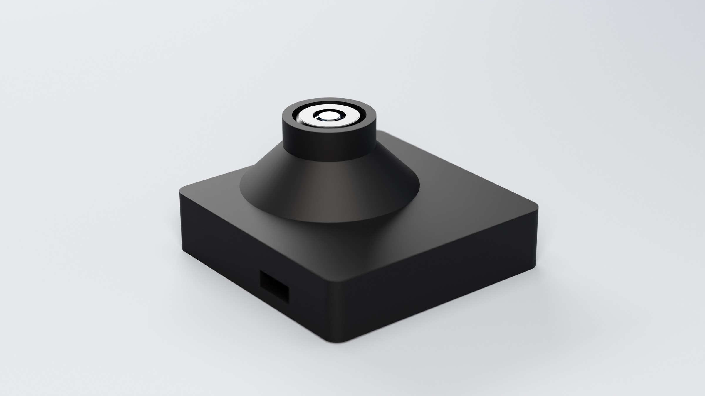
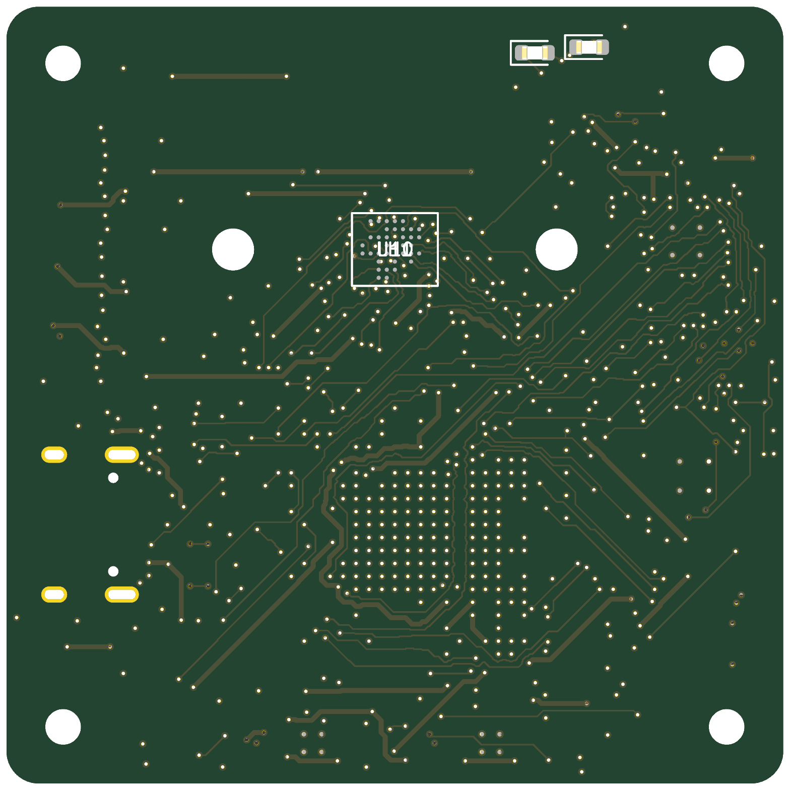
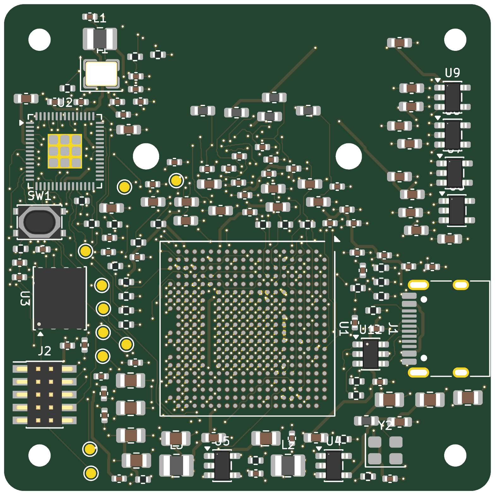
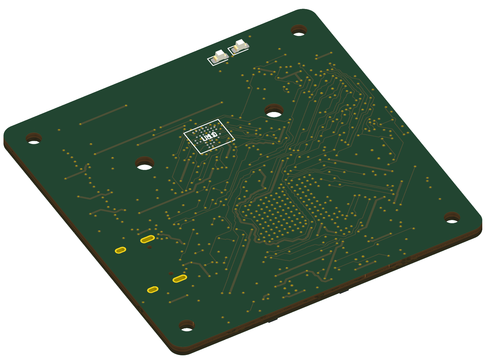
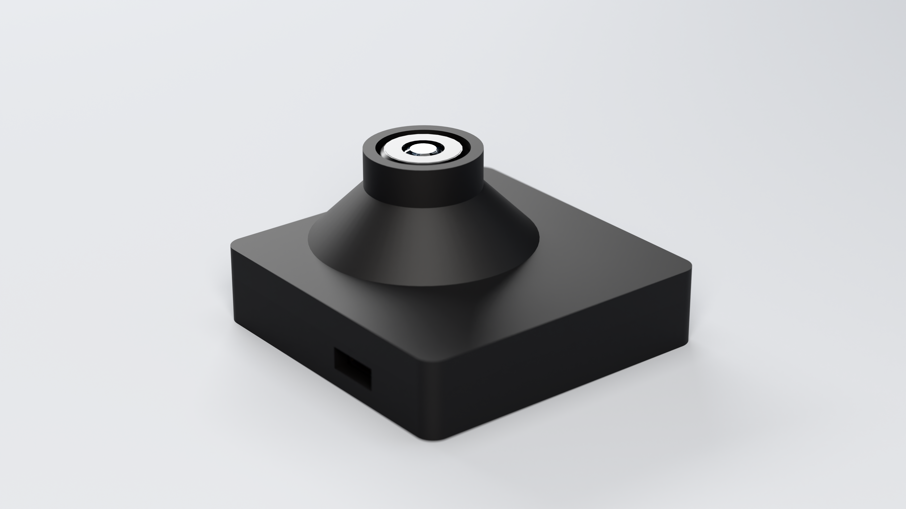
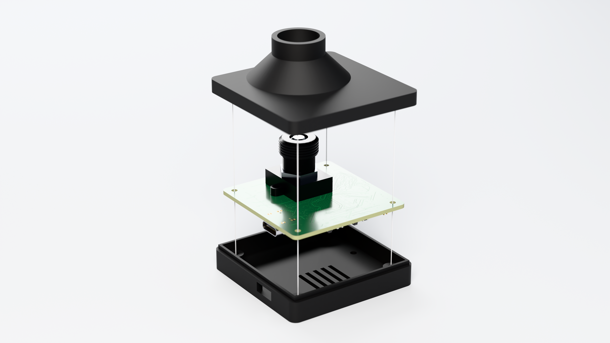
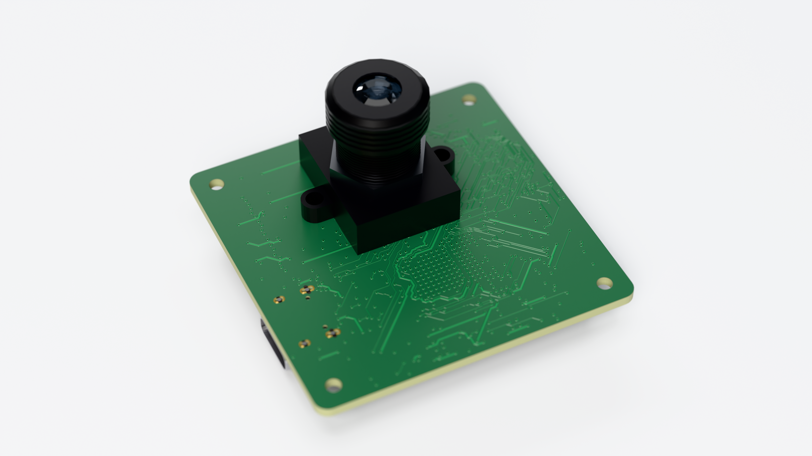
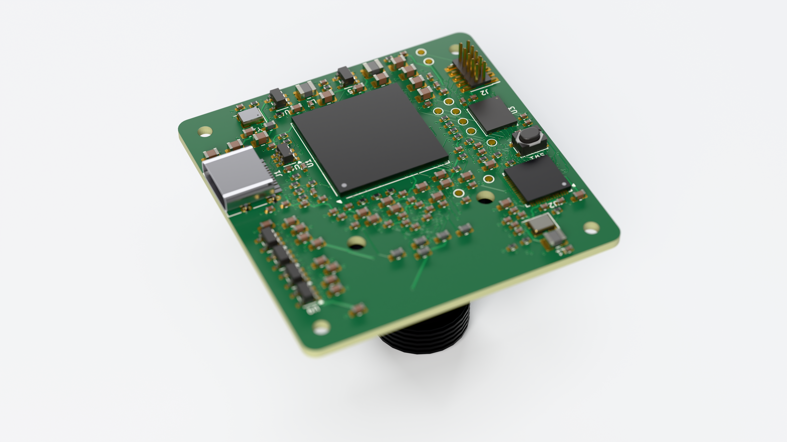
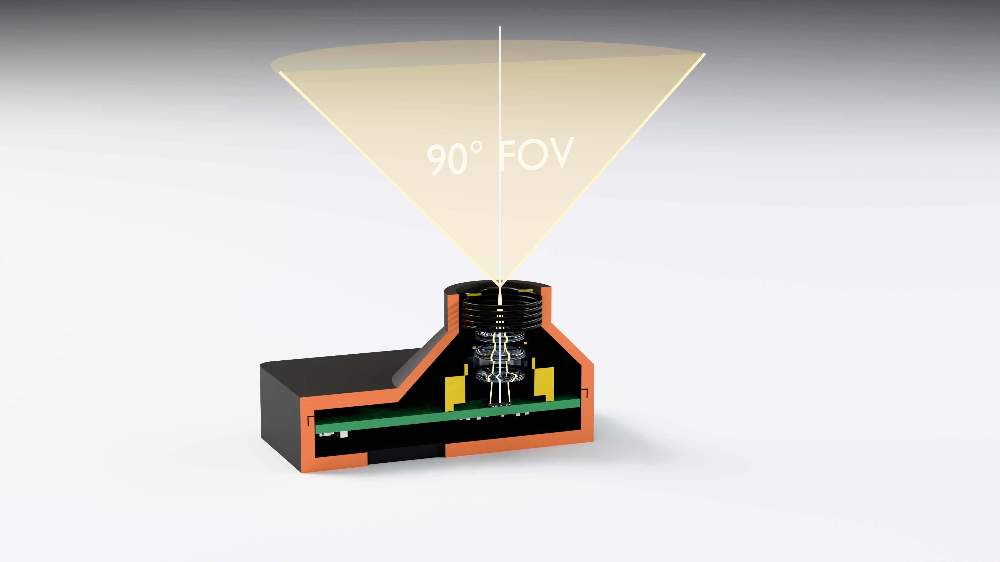
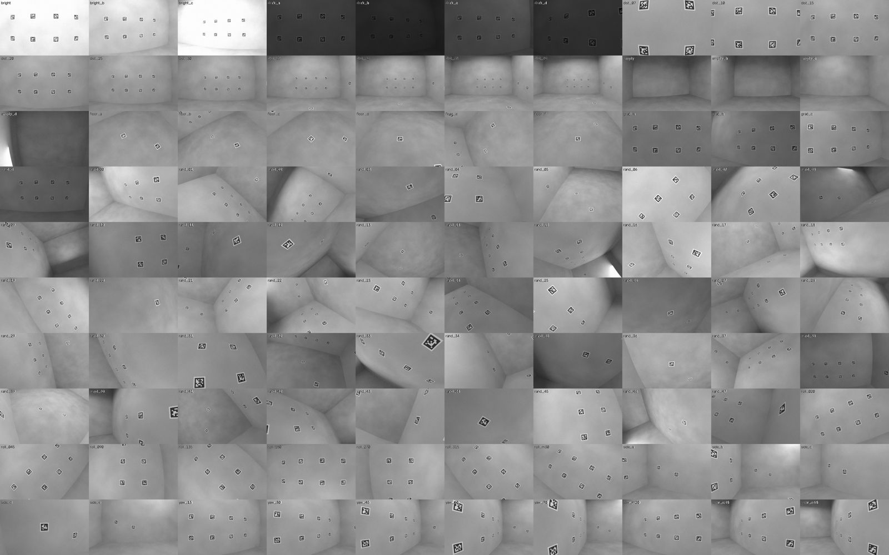

AprilTag camera: project browser
Custom vision chip (ECP5 FPGA + own TPU CPU) + OV9281 120 fps global-shutter sensor + RP2350 pose solver, one USB-C cable.
Everything below is generated from the repository by site/build_site.py and works offline (file://).
OV9281 (MIPI, 120 fps) -> ECP5 FPGA: D-PHY/CSI-2 RX, threshold, despeckle, CCL, TPU (tag decoder in ROM)
-> RP2350 MCU (USB, stored field map, pose solve) -> host

About this site
Generated 2026-10-28 15:05 by site/build_site.py (run py -3.12 site/build_site.py; reads the repo, writes only under site/). All data is embedded or loaded with <script src>, so it works from file://.
- 3D: three.js r147 (non-module build + OrbitControls) vendored in
site/vendor/, MIT licence. - PCB 3D: full-assembly GLB from kicad-cli (
render/out/apriltag_cam_full.glb) converted bysite/glb_convert.py; the STEP wasrender/out/apriltag_cam_full.step. - Markdown rendered with markdown-it-py; charts are inline SVG.
- Per-image chip pose errors were recomputed at build time (
tests/analyze_chain.pylogic: firmware solver on the stored RTL tag estimates), not read from a stored file.
Not included / caveats at build time
- nothing missing
The repository has other material not mirrored here (firmware/host source, tests, tools, simulation logs in results/*.log, raw Blender renders in test_images/raw).
Overview (README)
rendered from README.md
AprilTag camera: custom vision chip + 120 fps global-shutter camera, one USB-C cable
A self-contained camera that detects AprilTags (tag36h11) at 1280x800 / 120 fps and hands back the camera's pose in a world frame you define. You send it the tags you use and where they are (plus the lens calibration) once; it stores them in flash and then streams the camera position and orientation over the same USB-C cable that powers it.
OV9281 (MIPI, 120 fps) -> ECP5 FPGA running custom RTL (threshold, labelling, own CPU with the tag decoder baked into
its ROM) -> RP2350 MCU (USB, stored field map, pose solve) -> host
Nothing here is a stock vision pipeline: the per-pixel and per-tag work is hardware designed in Verilog in this repo, including a small custom processor (the TPU) whose program is burned into the chip image. The MCU only sees the tag estimates (id + sub-pixel corners), never an image.
What is in the box
| directory | contents |
|---|---|
rtl/ |
the chip: D-PHY + CSI-2 receiver, adaptive threshold, despeckle, connected components, TPU (custom processor + baked tag36h11 ROM), SPI/I2C, top levels, pin constraints (apriltag_cam.lpf), generated TPU program (tpu_prog.hex) |
tools/ |
golden Python models of every block, TPU assembler + instruction-set simulator + the baked program (tpu_prog.py), Blender scene/dataset generator, reference detector, sensor init generator, FPGA flow scripts |
tb/, tests/ |
Verilog testbenches and 226 pytest tests (see docs/verification.md) |
test_images/ |
100 rendered 1280x800 test frames (Blender Cycles, lens distortion + sensor noise model) with ground-truth poses (ground_truth.json) |
firmware/core, firmware/rp2350 |
MCU firmware: pose solver, USB protocol, flash storage, auto exposure; RP2350 (Pico SDK) port |
host/ |
Python library + CLI (atcam.py) with a simulated device so everything runs without hardware |
pcb/ |
4-layer 48 x 48 mm board generated from code (design.py, build_pcb.py), routed, fabrication outputs |
housing/ |
3D-printable two-part enclosure (OpenSCAD, STLs) |
docs/ |
architecture, hardware, protocol, verification, FPGA results |
config/ |
example field map (tag_map.json) and camera calibration |
Using it
import sys; sys.path.insert(0, "host")
from apriltag_cam import Camera, load_json
with Camera.open_serial("COM5") as cam: # USB-C CDC serial port
cam.set_calibration(load_json("config/camera_calibration.json"))
cam.set_field(load_json("config/tag_map.json")) # tag ids, sizes, 3D positions + orientations (quaternion wxyz)
cam.commit() # stored in flash; survives power cycles
for pose in cam.stream(): # ~120 Hz
print(pose.frame_id, pose.position, pose.quaternion, pose.ntags, pose.rms_px)
py -3.12 host/atcam.py --sim configure --map config/tag_map.json --calib config/camera_calibration.json and ... --sim stream run the same flow against the simulated device (native firmware + a fake FPGA fed with real RTL results).
Protocol: docs/protocol.md. Conventions (world, tag, camera frames, corner order) are at the top of tools/geom.py.
Rebuilding / re-running
py -3.12 tools/make_tags.py # tag images + the 587-code ROM table
py -3.12 tools/make_dataset.py # Blender renders (needs Blender 5.x) -> test_images/
py -3.12 tools/tpu_prog.py # assemble the TPU program ROM (rtl/tpu_prog.hex)
py -3.12 tests/run_all.py # the whole verification suite
bash tools/fpga_flow.sh # yosys + nextpnr-ecp5 (+ ecppack bitstream)
"C:/Program Files/KiCad/10.0/bin/python.exe" pcb/build_pcb.py --route ; py -3.12 pcb/make_outputs.py
Tools used: Icarus Verilog 13, Yosys 0.66, nextpnr-ecp5 0.7, KiCad 10, Freerouting 2.1, OpenSCAD 2021, Blender 5.1,
arm-none-eabi-gcc, Pico SDK (all installed during the build; see docs/).
Headline results (details and caveats in docs/verification.md, docs/fpga.md, docs/hardware.md)
- 120.08 fps sustained in full-chip simulation at true sensor timing (832,800 clocks per frame at 100 MHz), no dropped frames, two frame banks so capture never stalls.
- 100 rendered frames through the simulated chip + the MCU's solver: median camera position error about 1-2 mm and 0.02-0.04 deg; 93 % of visible tags detected in normal-light frames (the reference AprilTag library: 96 %).
- RTL is verified bit-exact against Python golden models (threshold, despeckle, labelling, the custom CPU), and the whole chain is exercised with real CSI-2 packets and a bit-level D-PHY model with lane skew and clock offsets.
- Open-source place-and-route onto the real ECP5-85F pins, with measured resource use and timing (
docs/fpga.md).
Honest limits - read before building hardware
- Not run on silicon. Everything is simulated or tool-checked; there is no physical board. The ECP5 D-PHY receiver (LVDS gearing, sync hunt) and the OV9281 bring-up are the first things to validate on a prototype.
- OV9281 footprint: the ball map comes from an open-hardware reference design, but the CSP ball pitch/pad size is assumed (0.5 mm / 0.25 mm). Verify against OmniVision's drawing before ordering. Bare-CSP assembly with an M12 holder needs a specialist assembler.
- Timing closure: see
docs/fpga.mdfor the measured fmax of each clock domain against the 100 MHz / 200 MHz targets. Anything reported as failing there must be fixed (more pipelining) before relying on 120 fps in hardware. - Detection is weaker than the reference library at long range (> ~3.5 m for 16.5 cm tags), in very low light (until the MCU's auto-exposure runs) and in cluttered, dim backgrounds (the labeller drops rows beyond ~55 runs/row and flags it).
- No schematic capture: the board is netlist-first (
pcb/design.py,pcb/output/netlist.txt).
Architecture
rendered from docs/architecture.md
Architecture
24 MHz osc USB-C (power + data, FS device)
| |
+-----------+ +---v---------------------------------------+ +-----v-------------+
| OV9281 | | ECP5 LFE5U-85F-8BG381C (custom RTL) | | RP2350A (MCU) |
| 1280x800 | | | SPI | - USB CDC link |
| global |MIPI dphy_rx -> csi2_rx -> thresh_binarize -> |<---->| - field map + |
| shutter |2-lane| (LVDS gearing, (packet (adaptive |12 MHz calibration |
| 120 fps +----->| sync, deskew) layer) threshold) | | flash storage |
| | | -> despeckle -> run_ccl -> TPU | | - pose solve |
+-----^-----+ | (3x3 maj.) (components) (own | | (LM over all |
|I2C | CPU, baked ROM) | | tag corners) |
+------------+ i2c_master + sensor_init ROM spi_slave | | - auto exposure |
+-------------------------------------------+ +-------------------+
frame banks 2x1 Mbit | candidate RAM | result RAM
Everything per-pixel and per-tag is hardware. The MCU never sees an image: it receives, for each decoded tag, an ID and four sub-pixel corners (Q16.16), solves the camera pose from the stored field map, and streams it to the host.
Pixel path (what the chip does to every frame)
| stage | module | what it does | latency |
|---|---|---|---|
| D-PHY RX | dphy_rx, dphy_lane, async_fifo |
LVDS DDR 4:1 gearing from the sensor clock lane, SoT-sync hunt (3 zero bytes + 0xB8) at all 8 bit alignments, both nibble orders tried in parallel, 2-lane deskew, CDC to the 100 MHz core clock | ~1 us |
| CSI-2 | csi2_rx |
header ECC (SEC-DED, 1-bit correction), CRC-16, FS/FE, line count check; 2 pixels / clock | 3 clocks |
| threshold | thresh_binarize |
2x2 binning, 8x8-pixel tile min/max, 3x3 tile neighbourhood, per-tile contrast test, black mask; 17-row delay line | 17 rows |
| despeckle | despeckle |
3x3 majority filter (suppresses isolated speckle so the labeller is not flooded) | 1 row |
| components | run_ccl |
streaming run-based 4-connected labelling, union-find, per-component area and 8 directional extremes; filters; candidate records | ~13 rows + scan |
| tag unit | tpu_core |
custom processor, baked program: coarse quad -> sub-pixel edge refinement by line fitting on binary samples -> homography -> 6x6 sampling -> tag36h11 match (587 codes x 4 rotations in ROM) | ~0.2 ms / 6 tags |
| bridge | cam_core, spi_slave |
ping-pong frame/candidate/result banks, registers, SPI (mode 0, <= 16 MHz), I2C bring-up of the sensor | - |
Why the TPU (and not a CPU running code)
The tag decoder is a small fixed program with a lot of fixed-point multiply/divide and pixel look-ups. The TPU
(tools/tpu_isa.py, rtl/tpu_core.v) is a 32-bit processor with exactly the operations that program needs: Q16.16
multiply/shift, 64-bit-numerator divide, a binary-frame pixel fetch, candidate read, result write and a hardware
TAGMATCH instruction that scans the baked code ROM. Its program (tools/tpu_prog.py, 574 words) is assembled
into the instruction ROM at build time, so the chip contains the algorithm; there is no firmware to load. A Python
instruction-set simulator is the golden model and the RTL is checked bit-exact against it (every arithmetic corner
case, plus full scenes).
Timing budget at 120 fps
OV9281 settings (tools/ov9281_init.py, register values from the mainline Linux driver):
400 MHz DDR link = 800 Mb/s per lane, 2 lanes, RAW8 -> 200 Mpixel/s; HTS = 1600 px, VTS = 1041 lines ->
200e6 / (1600 x 1041) = 120.08 fps.
- byte clock = 100 MHz; 2 pixels per clock; one line = 800 clocks (640 carry pixels), frame = 832,800 clocks (8.328 ms)
- threshold + CCL are paced by the line rate; CCL needs <= ~13 clocks per run, so it sustains about 55 runs per row
inside the 800-clock line (
max_row_cyclesis exported in the status registers); rows beyond that are dropped with a flag (never a hang) - seedocs/verification.md - two frame banks: frame N is processed by the TPU (median ~0.2-0.35 ms, worst case measured 2.1 ms) while frame N+1 streams into the other bank, so capture never stalls; a frame is only dropped (and counted) if the TPU is still busy with the bank the next frame would overwrite
- end-to-end latency (last pixel -> tag list in the result RAM) = 17-row threshold delay + 1 row despeckle + ~13 rows CCL + TPU run ~ 0.15 ms + TPU time
Memory map (SPI, 24-bit byte addresses)
| address | content |
|---|---|
0x000000..0x0000FF |
registers (ID 0x41544731, CTRL, thresholds, STATUS, counters, I2C bridge, FRAME_SUM) |
0x001000, 0x002000 |
result banks 0/1: word0 = tag count, record i at word 16+16i |
0x100000, 0x200000 |
debug read-back of the binary frame banks (only while the TPU is idle) |
0x300000, 0x301000 |
candidate RAM banks (debug) |
Result record (16 words): w0 = 0x80000000 | ham<<12 | rot<<10 | id, w1..w8 = corners TL,TR,BR,BL as (x,y) Q16.16 pixels
(pixel centre of the top-left pixel = (0,0)), w9 label, w10 area, w11 frame id, w12 quad area.
The same tables are in rtl/cam_core.v and firmware/core/atapp.h.
Pose solve (MCU)
firmware/core/atpose.c: corner pixels -> undistort with the stored calibration -> homography pose of the largest tag ->
Levenberg-Marquardt over all tag corners (6 DoF, analytic Jacobian) -> planar-ambiguity second start for single tags ->
leave-one-out outlier rejection. Output: camera position and orientation in the world frame defined by the field map.
Float32 build is what runs on the RP2350 (single-precision FPU).
Hardware
rendered from docs/hardware.md
Hardware
PCB: 48 x 48 mm, 4 layers (F.Cu signal / In1 GND plane / In2 3V3 plane / B.Cu signal), 1.6 mm, generated from
pcb/design.py (netlist + placement) by pcb/build_pcb.py (KiCad 10 Python API) and routed with Freerouting.
pcb/pcb_params.json is the mechanical contract shared with the housing.
| side | parts |
|---|---|
| top (lens side) | OV9281 (bare CSP) at (0,+9), M12 lens holder footprint (20x20, two M2.6 holes), PWR + STAT LEDs, 4 M2 mounting holes |
| bottom | ECP5-85F BG381 at (0,-8), RP2350A, 16 MB QSPI flash, USB-C (left edge), all regulators, decoupling, JTAG header, test points, BOOTSEL button |
Block / power tree
USB-C VBUS --ferrite--> +5V --+-- TLV62569 buck --> +3V3 (MCU, flash, FPGA banks 2/3/6/7/8, LDO inputs)
+-- TLV62569 buck --> +1V1 (ECP5 core, 20 balls)
+3V3 --+-- TLV75525 LDO --> +2V5 (ECP5 VCCAUX)
+-- TLV75518 LDO --> +1V8 (ECP5 banks 0/1/7 = MIPI + sensor control, 24 MHz oscillator, sensor DOVDD)
+-- TLV75528 LDO --> +2V8 (sensor AVDD/EVDD, via ferrite)
+-- TLV75512 LDO --> +1V2 (sensor DVDD/PVDD, via ferrite)
RP2350 internal buck (VREG_LX, 3.3 uH) --> +1V1MCU (DVDD)
Power budget (typical): FPGA core ~0.4 A @1.1 V, aux 0.1 A, MCU ~50 mA, sensor ~120 mA -> about 1.1 W from 5 V (USB 2.0 limit 2.5 W). The USB-C receptacle presents 5.1 kOhm Rd on CC1/CC2 (default-power sink).
FPGA pin plan (tools/pins.py, single source for the LPF and the PCB netlist)
| signal | ball | bank / standard | notes |
|---|---|---|---|
MIPI_CLK_P/N |
F2 / E2 | bank 7 (left), LVDS | PCLKT7_0: edge-clock capable pad, source of the DDR edge clock (IDDRX2F 4:1 gearing exists only on left/right banks - found by nextpnr) |
MIPI_D0_P/N |
G3 / F3 | bank 7, LVDS | |
MIPI_D1_P/N |
H4 / G5 | bank 7, LVDS | |
| 100 ohm across each pair | at the FPGA balls (D-PHY HS termination) | ||
CLK24M |
D12 | bank 1, 1.8 V | 24 MHz 1.8 V oscillator -> PLL (100 MHz core, 24 MHz sensor XVCLK) |
XVCLK, XSHUTDN, SCL, SDA |
B13, C13, A12, A13 | bank 1, 1.8 V | I2C pull-ups 2.2 k to 1.8 V |
SPI_SCK/CS/MOSI/MISO, FPGA_IRQ, FPGA_RST |
E16, E17, E18, F16, F18, G16 | bank 2, 3.3 V | to the RP2350 SPI0 |
LED_STAT, spare LEDs |
D18, D19, E19, F19 | bank 2 | |
| configuration | CFG[2:0] = 001 (slave SPI) | bank 8 | RP2350 loads the bitstream (SPI1) after power-up: PROGRAMN, INITN, DONE, CCLK, MOSI (W2), MISO (V2), CSSPIN (R2) |
| JTAG | TCK T5, TMS U5, TDI R5, TDO V4 | 1.27 mm 2x5 header |
OV9281 connection (ball map from the Antmicro OV9281 dual camera board, open hardware)
Rails: DOVDD 1.8 V, AVDD/EVDD 2.8 V, DVDD/PVDD 1.2 V (ferrite-filtered, 100 nF + 1 uF each), VH/VN1-3 1 uF to GND,
EGND/AGND/DOGND to ground. MIPI lanes MDP0/MDN0, MDP1/MDN1, clock MDCP/MDCN to the FPGA bank 0 pairs.
XVCLK from the FPGA PLL (24 MHz), I2C address 0x60, XSHUTDN from the FPGA.
Things that must be checked before ordering boards
These are limits of what could be verified without the physical parts and the vendor documents; they are listed rather than hidden:
- OV9281 CSP footprint (
OV9281_CSPinbuild_pcb.py): the ball map comes from the open-hardware reference design above, but the ball pitch (0.5 mm) and pad size (0.25 mm) are assumptions. Replace with the dimensions from OmniVision's package drawing. Bare-CSP sensor assembly with a lens holder also needs a specialist assembler (active alignment/focus); the optical stack (M12, f = 1.92 mm, 90 deg HFOV) is inhousing/README.md. - ECP5 IDDRX2F bit order and the D-PHY SoT hunt are verified against a behavioural model only. The receiver tries
both nibble orders so it does not depend on the convention, but it has not been run on silicon; bring-up should start
with the
status/lock bits ofdphy_rx(LED) and the CSI-2 ECC/CRC counters in the registers. - No external schematic capture: the design is netlist-first (
pcb/design.py);pcb/output/netlist.txtandbom.csvare generated from it. ERC-style checks (single-pin nets, power pin coverage) are intests/test_pcb.py. - The RP2350 slave-SPI FPGA configuration opcodes (
firmware/rp2350/fpga_config.c) come from memory of Lattice TN1260 and are unverified.
Verification
rendered from docs/verification.md
Verification
Run everything with py -3.12 tests/run_all.py (about 35 minutes; --quick skips the long frame-level RTL runs).
226 tests in 16 files. What each layer proves:
| layer | file | tests | what it proves |
|---|---|---|---|
| dataset | test_dataset.py |
7 | 100 Blender-rendered 1280x800 frames, ground truth reprojects consistently, reference detector finds the tags |
| CSI-2 packet layer (RTL) | test_csi2.py |
8 | clean frame, 1-bit header errors corrected, 2-bit errors dropped (all 276+144 double-error combinations are detectable: odd-weight SEC-DED columns), CRC errors, missing line, truncated burst, recovery, ignored packet types |
| D-PHY receiver (RTL, bit level) | test_dphy.py |
12 | real lane bit streams at 800 Mb/s: lane skew 0-21 UI, +-200 ppm clock offset, noise between bursts, slot jitter, header bit errors, back-to-back frames, reversed gearbox bit order |
| threshold (RTL) | (bit-exact script in run_all/tests/rtlutil) |
- | 0 mismatching pixels vs tools/golden.py on 1280x800 frames |
| despeckle (RTL) | test_rtl_despeckle.py |
4 | bit-exact vs golden on 35 % random noise, edge/corner structures, a real mask, all-ones/zeros |
| connected components (RTL) | test_rtl_ccl.py |
8 | areas, bounding boxes and all 8 extremes identical to scipy labelling on random shapes, merging combs, parity edge cases, whole-frame black, overflow flags + clean recovery on the next frame, row-time budget |
| TPU | test_tpu.py |
14 | ISA semantics, RTL == ISS bit-exact (micro-program over all arithmetic corner cases, full scenes), algorithm accuracy (72/72 synthetic tags, 0.29 px mean corner error), rejection of non-tags, cycle budget |
| sensor bring-up | test_i2c.py |
1 | all 103 OV9281 init writes land in order over I2C, read-back, ID 0x9281, NACK detection |
| system (RTL) | test_chain.py |
6 | whole chip at true 120 fps timing: 3 frames back-to-back, FS-to-FS = 832,800 clocks exactly (120.08 fps), zero dropped frames, ping-pong banks, bad-CRC / missing-line frames rejected and the next frame delivered, overload frame does not hang, SPI register path |
| pose solver (C) | test_pose_solver.py |
11 | float and double builds agree; 0.004 mm / 0.02 deg on noise-free corners over 96 images; noise tolerance; outlier rejection; planar ambiguity |
| MCU firmware | test_fw_proto.py, test_fw_storage.py, test_fw_app.py |
101 | COBS/CRC framing incl. fuzz, flash storage with power loss simulated at every byte of a commit, command handling, torn FPGA reads, auto-exposure convergence |
| host + end to end | test_host_e2e.py, test_host_fuzz.py |
32 | host library against the real firmware code with the FPGA result words from the RTL runs; garbage/split/dropped bytes |
| board data | test_pcb.py |
13 | every net has >= 2 pins, every FPGA power ball on the right rail, pin plan legality (banks, LVDS pairs, edge-clock pad, left/right IDDR rule), regulator divider voltages, mechanical contract |
| housing | test_housing.py |
9 | watertight STLs, USB-C opening, screw posts vs PCB holes, 90 deg FOV cone clearance |
Whole-pipeline accuracy (100 images, RTL simulation of the chip -> firmware solver -> compared with ground truth)
Chip (CSI-2 stream at 120 fps timing, simulated RTL) -> tag estimates over SPI -> C pose solver. Versus the reference
detector (pupil-apriltags + OpenCV solvePnP) on the same images (tests/analyze_chain.py,
results/rtl_chain_results.json, results/reference_baseline.md):
| this chip | reference | |
|---|---|---|
| tags detected (all 100 images) | 514 / 563 (91 %) | 541 / 563 (96 %) |
| tags detected (excluding the 4 deliberately dark images) | 496 / 533 (93 %) | - |
| spurious IDs (not in the map, ignored by the MCU) | 7 | 1 |
| ghost detections of map tags that are not visible | 0 | - |
| corner error, mean (px) | 0.5-0.7 | 0.23 |
| camera position error, median (mm) | 0.8 (bright) - 1.9 (far) | 0.5-0.9 |
| camera orientation error, median (deg) | 0.02-0.04 | ~0.014 |
| worst camera position error | 60 mm (a single grazing tag, planar ambiguity) | 40 mm |
Per category (pose from the RTL tag estimates): roll 1.1 mm, grad 1.1 mm, bright 0.8 mm, yaw 0.9 mm, dist 1.9 mm, rand 1.6 mm, dark 1.5 mm; floor 5.7 mm and side 3.8 mm are limited by how few tags those views contain (1-2).
Where it is weaker than the reference, honestly:
- Distance: the 8x8-pixel tile threshold and the 10-pixel minimum size lose some tags beyond ~3.5 m (tag < 20 px).
- Low light: the four
dark_*images (5-12 % of nominal light) detect 60 %. The sensor's exposure/gain is meant to be closed by the MCU's auto-exposure loop (FRAME_SUMregister; tested against a simulated sensor), which the static dataset cannot exercise. - Clutter: binary processing is exposed to textured, dim backgrounds. The CCL sustains about 55 runs per row inside the
800-clock line; rows beyond that are dropped (flag bit in
CCLstatus), never a hang. 5 of 100 images raise the flag (2 dark, 2emptynoise-only, 1 gradient); all still return a result. - Corner accuracy is 2-3x worse than the reference (binary sampling), but pose error is nearly as good because the solver uses every corner of every tag.
Timing and resources (measured)
120 fps: FS-to-FS period 832,800 clocks @ 100 MHz = 8.328 ms = 120.08 fps, no dropped frames in multi-frame runs. Per frame: CCL row time <= 651 clocks in every unflagged image (budget 800); TPU 190k clocks median, 523k worst (5.2 ms @ 100 MHz, inside the 8.3 ms frame period).
FPGA (yosys + nextpnr-ecp5, LFE5U-85F-8BG381C): see docs/fpga.md.
FPGA results
rendered from docs/fpga.md
FPGA implementation results (Yosys + nextpnr-ecp5, LFE5U-85F-8BG381C, speed grade 8)
Flow: bash tools/fpga_flow.sh <seed> <freq> (synth_ecp5 -> nextpnr-ecp5 with rtl/apriltag_cam.lpf -> ecppack).
A real bitstream is produced (sim/apriltag_cam.bit). Nothing has been loaded onto a physical device.
Resource use (full chip, seed 2)
| resource | used | of | % |
|---|---|---|---|
| LUT4 (total, incl. carry/RAM) | 18,225 | 83,640 | 21 |
| flip-flops | 6,151 | 83,640 | 7 |
| block RAM (DP16KD) | 190 | 208 | 91 |
| MULT18X18D | 8 | 156 | 5 |
| PLL | 1 | 4 | 25 |
| IO | 18 | 365 | 4 |
Block RAM is the scarce resource (two 1280x800 binary frame banks, candidate/result banks, 17-row threshold ring, tag ROM, TPU program). Logic has lots of headroom.
Timing (post place-and-route, nextpnr 0.7)
| seed | core clock fmax | D-PHY sclk fmax (target 200 MHz) |
|---|---|---|
| 2 | 87.72 MHz | 254 MHz (pass) |
| 3 | 84.62 MHz | 215 MHz (pass) |
| 4 | 80.90 MHz | 218 MHz (pass) |
| 5 | 85.02 MHz | 215 MHz (pass) |
Decision: the core runs at 85.714 MHz, not 100 MHz. The PLL (rtl/sys_pll.v, generated by ecppll) produces
85.7143 MHz; the CSI-2/line-time constants are set for it (LINE_CYC_DEFAULT=686 clocks per 8 us sensor line). Seed 2
closes that clock with ~2 MHz margin; other seeds land within a few MHz of it, so closure is seed-dependent and thin.
The 120 fps requirement is a property of the sensor rate (line period 8.0 us, frame 1041 lines = 8.328 ms), not of the
core clock, as long as the core keeps up: 686 clocks per line is the budget for the CCL (<= 651 measured in unflagged
frames), and the TPU worst case (523k clocks = 6.1 ms at 85.7 MHz) fits inside the frame period.
100 MHz is not closed (best 87.7 MHz). Going to 100 MHz needs more pipelining in run_ccl / tpu_core.
The earlier simulations were run at 100 MHz clock counts (832,800 clocks/frame); at 85.7 MHz the same 8.328 ms frame
corresponds to 713,840 clocks, and the per-line budget was re-checked at 686 clocks.
Caveats
- Timing is nextpnr's estimate, not signoff; real-device margins are unknown.
- Seed variation (80.9 - 87.7 MHz) means the committed bitstream should be built with seed 2 and re-checked after any RTL change.
- Block RAM at 91 % leaves little room for added features.
Protocol
rendered from docs/protocol.md
AprilTag camera USB protocol
Transport: USB-C CDC serial (virtual COM port; baud rate is ignored). The link is a plain byte stream, so every message is
framed. Source of truth: firmware/core/atproto.[ch], firmware/core/atapp.c; host implementation
host/apriltag_cam/protocol.py. tests/test_fw_proto.py::test_doc_* checks the tables below against atproto.h.
All multi-byte integers and floats are little endian; floats are IEEE-754 binary32.
1. Framing
frame (on the wire) = COBS( type[1] | body[0..256] | crc16[2] ) | 0x00
type: message id (tables below).crc16: CRC-16/CCITT-FALSE (poly 0x1021, init 0xFFFF, no reflection, xorout 0) overtype | body, stored low byte first. Check value:crc16("123456789") = 0x29B1.- COBS: standard Consistent Overhead Byte Stuffing (a code byte 0xFF means 254 data bytes follow and no implicit zero).
The encoded data contains no 0x00 byte, so
0x00is an unambiguous frame delimiter and resynchronisation point. - Maximum body 256 bytes (
AT_MAX_BODY); the receiver buffers 264 bytes of encoded data (AT_MAX_FRAME). - Receiver: bytes are collected until 0x00. An empty frame (consecutive 0x00) is ignored. A frame that overflows the buffer,
fails COBS decoding, is shorter than 3 decoded bytes, or fails the CRC is dropped (and counted) without any reply.
Garbage before a frame is harmless if a 0x00 separates it from the frame; a host should therefore send a lone
0x00before the first command after (re)opening the port. - Request/response: the device answers every command with exactly one frame (ACK, NAK or a typed response). Commands are
idempotent, so a host may retry on timeout. While streaming is enabled, unsolicited
POSEframes are interleaved.
2. Message ids
Host to device:
| id | name | body (bytes) | response |
|---|---|---|---|
| 0x01 | PING | token, 4 (shorter allowed) | PONG |
| 0x02 | SET_CALIB | 36 | ACK |
| 0x03 | CLEAR_MAP | 0 | ACK |
| 0x04 | ADD_TAG | 34 | ACK |
| 0x05 | COMMIT | 0 | ACK |
| 0x06 | GET_CONFIG | 0 | CONFIG |
| 0x07 | STREAM | 3 | ACK |
| 0x08 | SET_SENSOR | 3 | ACK |
| 0x09 | GET_STATUS | 0 | STATUS |
| 0x0A | SET_TRACK | 4 | ACK |
| 0x0B | GET_POSE | 0 | POSE or NAK(NO_POSE) |
| 0x0C | GET_TAG | 2 | TAG |
| 0x0D | GET_TAGS_RAW | 0 | TAGS |
| 0x0E | SET_AE | 1 | ACK |
Device to host:
| id | name | body (bytes) |
|---|---|---|
| 0x80 | ACK | 1 |
| 0x81 | PONG | 12 |
| 0x82 | POSE | 44 |
| 0x83 | TAGS | 5 + 35 n (n <= 7) |
| 0x86 | CONFIG | 40 |
| 0x87 | TAG | 36 |
| 0x89 | STATUS | 48 |
| 0xFF | NAK | 2 |
Error codes (second byte of NAK):
| code | name | meaning |
|---|---|---|
| 1 | BAD_LEN | body length is not the one the command requires |
| 2 | FULL | tag map holds 64 tags and the id is new |
| 3 | FLASH | flash erase / program / verify failed (COMMIT), or the sensor I2C bridge rejected a write (SET_SENSOR) |
| 4 | UNKNOWN | unknown command id |
| 5 | NO_POSE | GET_POSE before any pose has been solved |
| 6 | RANGE | value out of range (see command) |
3. Commands
0x01 PING -> 0x81 PONG
Request: token[4] (anything shorter than 4 bytes is answered with a zero token).
PONG: token[4] | fw_version u32 (0x00010000 = 1.0.0) | fpga_id u32 (0x41544731 "ATG1" when the FPGA is configured and alive, else 0).
0x02 SET_CALIB (RAM only, until COMMIT)
fx f32 | fy f32 | cx f32 | cy f32 | k1 f32 | k2 f32 | p1 f32 | p2 f32 | k3 f32 (OpenCV model, pixels; pixel centre of the top-left
pixel is (0,0)). NAK RANGE if fx <= 1, fy <= 1 or either is NaN.
0x03 CLEAR_MAP
Empties the field map (RAM). Body ignored.
0x04 ADD_TAG
id u16 | size f32 (edge of the black square, m) | pos x,y,z f32 (tag centre in world, m) | quat w,x,y,z f32 (tag->world).
Tag frame: x right, y up, z out of the printed face; world is Z up. Adding an existing id replaces it. NAK FULL when 64 tags are stored
and the id is new.
0x05 COMMIT
Writes calibration + map to flash (alternating slots, see section 6) and reads it back. ACK on success, NAK FLASH otherwise (the previous stored configuration is untouched). Takes up to ~100 ms (flash erase); hosts should allow >= 3 s.
0x06 GET_CONFIG -> CONFIG
fx fy cx cy k1 k2 p1 p2 k3 (9 x f32) | ntags u16 | reserved u16 (0).
0x0C GET_TAG -> TAG
Request index u16 (0 .. ntags-1, else NAK RANGE). TAG: id u16 | pad u16 (0) | size f32 | pos 3 x f32 | quat w,x,y,z 4 x f32
(quaternion is re-derived from the stored rotation, so it can differ from the sent one by float rounding and overall sign).
0x07 STREAM
enable u8 | divider u16. When enabled the device sends one POSE frame for every divider-th successfully solved FPGA frame
(divider 0 is treated as 1). Disable with enable = 0.
0x08 SET_SENSOR
exposure u16 (sensor lines, 1..800) | gain u8 (register value, 0x10 = 1x, >= 0x10). Writes OV9281 registers 0x3500..0x3502
(exposure << 4), 0x3509 (gain) through the FPGA I2C bridge with group hold. Disables auto exposure. NAK RANGE when out of range.
0x0E SET_AE
enable u8. 1 re-enables auto exposure (starting from the current exposure/gain), 0 disables it. Auto exposure is on after boot:
the target is mean brightness 110 (0..255, from FPGA register FRAME_SUM / 1,024,000), deadband +-12, exposure preferred up to 400
lines then gain up to 0xFF, at most 4x change per step, one frame skipped after every change.
0x09 GET_STATUS -> STATUS (48 bytes)
| offset | type | field |
|---|---|---|
| 0 | u32 | FPGA STATUS register: seq[31:16] tag_count[15:8] init_done[3] tpu_busy[2] res_bank[1] res_valid[0] |
| 4 | u32 | FPGA CCL register (0x28) |
| 8 | u32 | frames dropped (0x30) |
| 12 | u32 | frames total (0x34) |
| 16 | u32 | frames processed (0x38) |
| 20 | u32 | pose solutions computed |
| 24 | u32 | solver failures (no known tag / degenerate / no convergence) |
| 28 | u32 | torn reads (FPGA result bank changed during a read; retried) |
| 32 | u32 | frame id of the last processed result |
| 36 | u16 | tags in the map |
| 38 | u8 | last pose valid |
| 39 | u8 | streaming enabled |
| 40 | u16 | current exposure (lines) |
| 42 | u8 | current gain register |
| 43 | u8 | auto exposure enabled |
| 44 | u16 | last mean brightness x 256 |
| 46 | u16 | reserved (0) |
0x0A SET_TRACK
diff u8 | abs_black u8 | mindim u8 | maxham u8 (low 6 bits), written to the FPGA THRESH register (0x0C):
local contrast threshold, absolute black level, minimum tag dimension in pixels, maximum accepted Hamming distance.
Reset values 24, 64, 10, 2.
0x0B GET_POSE -> POSE
Latest solved pose. NAK NO_POSE if none yet.
POSE (44 bytes), also the unsolicited streaming message:
| offset | type | field |
|---|---|---|
| 0 | u32 | frame id (FPGA frame counter of the source frame) |
| 4 | u32 | processing time of the solver, microseconds |
| 8 | u8 | tags used by the solution |
| 9 | u8 | flags: 1 ambiguous (planar ambiguity unresolved), 2 outlier tag dropped, 4 single tag |
| 10 | u16 | tag observations in the frame (before filtering) |
| 12 | 3 x f32 | position x, y, z (m), camera to world: p_w = R q + t |
| 24 | 4 x f32 | quaternion w, x, y, z of R |
| 40 | f32 | reprojection RMS error (pixels) |
Camera frame: OpenCV (x right, y down, z forward). World Z up.
0x0D GET_TAGS_RAW -> TAGS
frame_id u32 | count u8 | count x { id u16 | hamming u8 | 4 corners (TL, TR, BR, BL) x (x f32, y f32) } (35 bytes per tag). At most 7 tags fit
in the 256-byte body; the first 7 observations are reported.
4. Streaming
After STREAM(1, d) the device emits POSE frames without request. Command responses are interleaved with them; a host must
match responses by type (and the echoed command id for ACK/NAK) and queue POSE frames. Disable on exit.
5. FPGA SPI map used by the MCU (for reference)
SPI mode 0, <= 12 MHz. Read: 0x03 a2 a1 a0 dummy d0 d1 ...; write: 0x02 a2 a1 a0 w0[7:0] w0[15:8] ... (little-endian words).
| address | register |
|---|---|
| 0x000000 | ID (0x41544731) |
| 0x000008 | CTRL |
| 0x00000C | THRESH |
| 0x000018 | STATUS |
| 0x00001C | FRAME_ID |
| 0x000040 / 0x000044 | I2C bridge command / data |
| 0x000060 | FRAME_SUM (sum of all pixels of the last frame) |
| 0x001000 / 0x002000 | result banks: word 0 = tag count; record i at word 16 + 16 i: w0 = 0x80000000 | ham << 12 | rot << 10 | id; w1..w8 corners TL,TR,BR,BL as signed Q16.16 (x, y) |
6. Flash storage
Two 4 KB slots at the end of flash, written alternately (slot = seq & 1); each commit erases and programs only the slot that does not hold the newest valid configuration, then reads it back. Slot image:
magic u32 0x31465441 ("ATF1") | seq u32 | ntags u16 | reserved u16 | 9 x f32 calibration | ntags x { id u16 | pad u16 | size f32 | pos 3 x f32 | quat 4 x f32 } | crc16 u16
(CRC-16/CCITT-FALSE over everything before it.) At boot the valid slot (magic, ntags <= 64, CRC) with the highest seq is loaded; if none is
valid the defaults (fx = fy = 640, cx = 639.5, cy = 399.5, no distortion, empty map) are used. A power loss at any point of a commit leaves
the previous configuration loadable (tests/test_fw_storage.py cuts power after every single byte operation).
Housing notes
rendered from housing/README.md
AprilTag camera housing
Two FDM parts generated from housing.scad (OpenSCAD 2021.01), sized from ../pcb/pcb_params.json (run py -3.12 gen_params.py first; it writes pcb_params.scad, which housing.scad includes).
set PATH=C:\msys64\ucrt64\bin;%PATH%
openscad -D "part=\"front\"" -o output/front.stl housing.scad
openscad -D "part=\"back\"" -o output/back.stl housing.scad
openscad -D "part=\"assembly\"" --render --imgsize 1200,900 --camera 0,0,12,60,0,35,230 -o output/assembly.png housing.scad
openscad -D "part=\"exploded\"" --render --imgsize 1200,1200 --camera 0,0,22,65,0,30,330 -o output/exploded.png housing.scad
Tests: py -3.12 -m pytest tests/test_housing.py -q.
Design summary
- BACK shell: floor 2.4, walls 2.4, four 6 mm posts at (+-20.5, +-20.5) (4.0 mm tall) whose top faces are the PCB seating plane (0.8 mm under the 3.2 mm bottom-side parts). M2 clearance holes (2.4) with 4.4 x 1.4 head counterbores in the underside, USB-C cut-out (9.34 x 3.66, centre y = -8) in the left wall, 2.5 mm boot-button access hole at (20,4), five 1.6 x 14 vent slots under the FPGA (centre (0,-8)), inner 1.0 x 1.5 lap tongue.
- FRONT cover: 45 degree conical roof (no supports when printed rim-down), 15 mm lens bore in a 19 mm OD hood centred on the sensor axis (0, 9); the cone roof and outer shell are clipped to the walls, corner bosses with 1.8 mm self-tapping pilots that press on the PCB top, lap groove, LED well plus two 2.0 mm bores for 1.75 mm clear-filament light pipes (cut to ~7.5 mm, glue flush).
- PCB is captured: lateral 0.2 mm clearance in the cavity (+ screw shanks in the 2.2 mm holes), vertical clamp between the four post shoulders and the four front bosses; top parts (lens holder 6 mm) have 0.9 mm headroom under the cone roof, bottom parts 0.8 mm.
- Snap fits vs screws: screws chosen. The front is a rigid cone and the PCB must be clamped without play; snaps on 2.4 mm PLA walls would be reworkable only with risk of cracking and give no clamp force. The lap joint also blocks light.
Print settings
PLA or PETG, 0.4 mm nozzle, 0.2 mm layers, 3 perimeters, 20 % gyroid, no supports, no brim needed. Black or dark-grey filament (stray light into the lens). BACK: floor down (as modelled). FRONT: rim down on the bed, hood pointing up (as in front.stl). The USB cut-out roof bridges 9.3 mm (acceptable); the 1.6 mm LED well bridge is tiny. Print the filament light pipes as clear 1.75 mm filament offcuts.
Hardware
| Qty | Item |
|---|---|
| 4 | M2 x 10 pan/cap head screws (see note), 3.8 mm head max |
| 4 (optional) | M2 heat-set inserts OD 3.2 x 4 mm into front bosses; set pilot_d = 3.2 |
| 2 | 1.75 mm clear filament, ~7.5 mm long (LED light pipes) |
| Note: M2 x 8 was requested but the stack (head seat to boss) is 6.2 mm + 1.6 mm PCB, so M2 x 8 would engage only 1.8 mm in the front boss. M2 x 10 gives 3.4 mm engagement (pilot depth 4.0). Use M2 x 10. |
Assembly
- Drop the PCB, lens side up, onto the four posts; the screws' holes must line up with the PCB mounting holes (USB-C at the left, in the cut-out).
- Fit the lens holder/lens (barrel top 20.0 mm above the PCB).
- Insert the light pipes into the front cover bores from below (or from above after assembly).
- Lower the FRONT cover over the lens so the tongue enters the groove.
- Turn the housing over, drive four M2 x 10 screws up through the back posts into the front bosses (do not over-tighten; PLA).
- Boot button: press with a 2 mm pin through the hole in the floor.
Dimension table
| Item | mm |
|---|---|
| Outer footprint | 53.2 x 53.2, corner R3 |
| Overall height (assembled) | 28.3 (split plane at z = 8.0, back incl. tongue 9.5) |
| Cavity (lateral) | 48.4 x 48.4 (0.2 per side) |
| Wall / floor / roof (vertical) | 2.4 / 2.4 / 2.4; hood wall 2.0 |
| PCB bottom / top above outer floor | 6.4 / 8.0 |
| Floor to PCB (bottom parts 3.2 mm) | 4.0 |
| Lens aperture (bore) | 15.0 dia, axis at (0, +9) |
| Hood rim above PCB top | 20.3 (lens front at 20.0) |
| Hood height above front-cover flat roof (5.0) | 15.3 |
| USB-C opening | 9.34 x 3.66, centre z = 4.8, y = -8 |
| Boot hole | 2.5 dia at (20, 4) |
| Vents | 5 slots 1.6 x 14, pitch 3.4, centred on (0,-8) |
| Screws | M2 x 10 at (+-20.5, +-20.5) |
FOV clearance calculation
Lens: f = 1.92 mm, HFOV = 90 deg. Sensor OV9281 1280 x 800 at 3 um pixels (active 3.84 x 2.40 mm): HFOV = 2 atan(1.92/1.92) = 90 deg (check). Half diagonal = sqrt(1.92^2 + 1.20^2) = 2.264 mm, so diagonal half-angle = atan(2.264/1.92) = 49.7 deg (DFOV 99.4 deg). Design uses 49.7 deg (worst case).
Cone leaving the lens: radius r(d) = r0 + d tan(49.7 deg) at distance d beyond the front-element plane (tan = 1.179), with r0 = 5.0 mm assumed clear radius of the front element (the 14 mm is the barrel OD; the pupil is behind the front glass, so this is conservative).
Hood rim is d = 0.3 mm beyond the lens front (20.3 vs 20.0 above PCB top): required radius = 5.0 + 0.3 x 1.179 = 5.35 mm. Bore radius is 7.5 mm, so margin = 2.15 mm. Worst case using the entire barrel radius (7.0 mm) as r0: 7.35 mm, margin 0.15 mm. Inside the hood the bore (cylinder) is wider than the cone at every height, so there is no vignetting. Barrel (14.0) in bore (15.0) leaves 0.5 mm radial clearance; holder (20 x 20 x 6, centred on the axis) has 0.9 mm headroom under the roof at its corners (cone roof height 6.96 at r = 14.14 from the axis). Total stack: holder 6 + barrel 14 = 20 mm above the PCB, hood rim 20.3 mm.
These are checked in tests/test_housing.py by sampling the cone against the front STL.
Assumptions / issues for the PCB engineer
- USB-C body assumed 3.2 mm tall, spanning x -24 to -16.7; opening centred at z = PCB bottom - 1.6.
- FPGA centre (0,-8) taken from keepout_note.
- LEDs at (9, 21.5) and (12, 21.5) sit 0.4 mm beyond the lens-holder edge (y = 19); the light-pipe block fits in that gap.
- No STEP/STL of the board existed in
pcb/output, so interference uses boxes from params (tests). - Screw heads must be <= 4.4 mm dia and <= 1.4 mm tall (pan head M2: 3.8 x 1.3).
Reference baseline
rendered from results/reference_baseline.md
Reference pipeline baseline
undistort -> pupil-apriltags tag36h11 -> SQPnP + LM over all detected tag corners.
Per category
| cat | imgs | vis | det | rate | false | corner mean/med/max px | pose imgs | t mean/max mm | rot mean/max deg |
|---|---|---|---|---|---|---|---|---|---|
| dist | 10 | 84 | 82 | 0.98 | 0 | 0.23/0.23/0.62 | 10 | 0.9/1.4 | 0.014/0.031 |
| yaw | 8 | 65 | 57 | 0.88 | 0 | 0.24/0.25/0.54 | 8 | 0.6/1.4 | 0.013/0.035 |
| roll | 8 | 51 | 51 | 1.00 | 0 | 0.23/0.22/0.61 | 8 | 0.6/1.2 | 0.013/0.041 |
| dark | 4 | 30 | 30 | 1.00 | 0 | 0.25/0.23/0.58 | 4 | 0.6/1.0 | 0.014/0.028 |
| bright | 3 | 24 | 24 | 1.00 | 0 | 0.50/0.46/0.93 | 3 | 0.7/0.9 | 0.017/0.027 |
| grad | 4 | 32 | 32 | 1.00 | 0 | 0.25/0.24/0.60 | 4 | 0.5/0.7 | 0.007/0.011 |
| side | 5 | 13 | 13 | 1.00 | 0 | 0.24/0.23/0.50 | 5 | 5.2/12.7 | 0.119/0.252 |
| floor | 6 | 16 | 16 | 1.00 | 0 | 0.25/0.25/0.48 | 6 | 6.1/11.4 | 0.157/0.278 |
| rand | 48 | 248 | 236 | 0.95 | 1 | 0.26/0.26/0.71 | 48 | 4.3/39.7 | 0.093/0.864 |
| empty | 4 | 0 | 0 | - | 0 | -/-/- | 0 | -/- | -/- |
Per image
| image | vis | det | corner mean px | rms px | t err mm | rot err deg |
|---|---|---|---|---|---|---|
| dist_07 | 4 | 4 | 0.42 | 0.22 | 0.5 | 0.009 |
| dist_10 | 4 | 4 | 0.29 | 0.23 | 0.6 | 0.007 |
| dist_15 | 8 | 8 | 0.24 | 0.24 | 0.4 | 0.007 |
| dist_20 | 8 | 8 | 0.26 | 0.28 | 0.7 | 0.012 |
| dist_25 | 8 | 8 | 0.24 | 0.26 | 0.5 | 0.010 |
| dist_30 | 8 | 8 | 0.19 | 0.22 | 1.3 | 0.020 |
| dist_35 | 10 | 10 | 0.19 | 0.21 | 1.1 | 0.016 |
| yaw_15 | 8 | 8 | 0.24 | 0.25 | 0.4 | 0.007 |
| yaw_30 | 8 | 8 | 0.23 | 0.24 | 0.3 | 0.008 |
| yaw_45 | 9 | 9 | 0.24 | 0.25 | 0.6 | 0.009 |
| yaw_60 | 10 | 8 | 0.28 | 0.27 | 0.5 | 0.010 |
| yaw_70 | 8 | 4 | 0.23 | 0.21 | 0.6 | 0.013 |
| roll_045 | 6 | 6 | 0.23 | 0.23 | 0.6 | 0.014 |
| roll_090 | 4 | 4 | 0.22 | 0.24 | 1.2 | 0.041 |
| roll_135 | 6 | 6 | 0.23 | 0.24 | 0.4 | 0.004 |
| roll_180 | 8 | 8 | 0.23 | 0.24 | 0.5 | 0.012 |
| roll_270 | 4 | 4 | 0.22 | 0.23 | 0.6 | 0.019 |
| dark_a | 8 | 8 | 0.24 | 0.24 | 0.6 | 0.013 |
| dark_b | 8 | 8 | 0.22 | 0.23 | 1.0 | 0.028 |
| bright | 8 | 8 | 0.50 | 0.53 | 0.4 | 0.005 |
| grad_a | 8 | 8 | 0.26 | 0.26 | 0.4 | 0.004 |
| grad_b | 8 | 8 | 0.25 | 0.24 | 0.5 | 0.006 |
| side_a | 3 | 3 | 0.23 | 0.22 | 4.3 | 0.094 |
| floor_a | 2 | 2 | 0.23 | 0.22 | 8.6 | 0.278 |
| floor_b | 4 | 4 | 0.26 | 0.25 | 1.4 | 0.029 |
| rand_00 | 6 | 6 | 0.27 | 0.28 | 0.1 | 0.007 |
| rand_01 | 8 | 8 | 0.24 | 0.24 | 0.5 | 0.003 |
| rand_02 | 7 | 7 | 0.25 | 0.24 | 1.5 | 0.027 |
| rand_03 | 2 | 2 | 0.26 | 0.18 | 9.6 | 0.234 |
| rand_04 | 3 | 3 | 0.29 | 0.23 | 0.7 | 0.032 |
| rand_05 | 3 | 3 | 0.33 | 0.33 | 14.0 | 0.256 |
| rand_06 | 5 | 5 | 0.27 | 0.26 | 0.4 | 0.011 |
| rand_07 | 5 | 5 | 0.26 | 0.23 | 0.6 | 0.011 |
| rand_08 | 3 | 2 | 0.23 | 0.15 | 39.7 | 0.864 |
| rand_09 | 7 | 5 | 0.25 | 0.21 | 0.7 | 0.019 |
| rand_10 | 4 | 4 | 0.25 | 0.24 | 0.4 | 0.013 |
| rand_11 | 3 | 3 | 0.24 | 0.18 | 4.2 | 0.094 |
| rand_12 | 2 | 2 | 0.35 | 0.27 | 2.8 | 0.115 |
| rand_13 | 3 | 3 | 0.32 | 0.30 | 2.5 | 0.066 |
| rand_14 | 9 | 9 | 0.25 | 0.26 | 0.5 | 0.006 |
| rand_15 | 9 | 5 | 0.23 | 0.22 | 0.7 | 0.010 |
| rand_16 | 7 | 5 | 0.32 | 0.29 | 0.6 | 0.009 |
| rand_17 | 6 | 6 | 0.31 | 0.33 | 1.6 | 0.023 |
| rand_18 | 8 | 8 | 0.25 | 0.24 | 1.7 | 0.036 |
| rand_19 | 7 | 7 | 0.26 | 0.26 | 0.8 | 0.016 |
| rand_20 | 1 | 1 | 0.29 | 0.05 | 9.3 | 0.075 |
| rand_21 | 8 | 8 | 0.24 | 0.24 | 0.9 | 0.011 |
| rand_22 | 8 | 8 | 0.25 | 0.25 | 0.7 | 0.007 |
| rand_23 | 6 | 6 | 0.23 | 0.25 | 0.8 | 0.015 |
| rand_24 | 8 | 7 | 0.21 | 0.21 | 0.3 | 0.006 |
| rand_25 | 4 | 4 | 0.25 | 0.25 | 0.3 | 0.006 |
| rand_26 | 2 | 2 | 0.29 | 0.21 | 8.5 | 0.203 |
| rand_27 | 10 | 8 | 0.25 | 0.26 | 0.5 | 0.006 |
| rand_28 | 8 | 8 | 0.24 | 0.23 | 0.6 | 0.018 |
| rand_29 | 7 | 7 | 0.25 | 0.25 | 0.9 | 0.014 |
| empty | 0 | 0 | - | - | - | - |
| dist_40 | 10 | 10 | 0.26 | 0.22 | 1.4 | 0.031 |
| dist_45 | 12 | 11 | 0.20 | 0.21 | 1.0 | 0.010 |
| dist_50 | 12 | 11 | 0.20 | 0.22 | 1.4 | 0.016 |
| yaw_m20 | 8 | 8 | 0.21 | 0.23 | 0.4 | 0.010 |
| yaw_m45 | 8 | 8 | 0.25 | 0.24 | 0.5 | 0.013 |
| yaw_m65 | 6 | 4 | 0.26 | 0.23 | 1.4 | 0.035 |
| roll_020 | 8 | 8 | 0.24 | 0.25 | 0.4 | 0.002 |
| roll_m30 | 8 | 8 | 0.24 | 0.25 | 0.4 | 0.003 |
| roll_315 | 7 | 7 | 0.24 | 0.24 | 0.4 | 0.005 |
| dark_c | 8 | 8 | 0.27 | 0.27 | 0.5 | 0.010 |
| dark_d | 6 | 6 | 0.26 | 0.25 | 0.4 | 0.005 |
| bright_b | 8 | 8 | 0.36 | 0.38 | 0.9 | 0.027 |
| bright_c | 8 | 8 | 0.65 | 0.66 | 0.9 | 0.019 |
| grad_c | 8 | 8 | 0.24 | 0.25 | 0.3 | 0.005 |
| grad_d | 8 | 8 | 0.24 | 0.25 | 0.7 | 0.011 |
| side_b | 4 | 4 | 0.25 | 0.25 | 0.7 | 0.011 |
| side_c | 2 | 2 | 0.25 | 0.18 | 12.7 | 0.252 |
| side_d | 2 | 2 | 0.28 | 0.21 | 2.8 | 0.109 |
| side_e | 2 | 2 | 0.20 | 0.22 | 5.7 | 0.129 |
| floor_c | 2 | 2 | 0.26 | 0.24 | 6.0 | 0.190 |
| floor_d | 1 | 1 | 0.30 | 0.01 | 11.4 | 0.251 |
| floor_e | 5 | 5 | 0.24 | 0.24 | 0.5 | 0.008 |
| floor_f | 2 | 2 | 0.22 | 0.17 | 8.8 | 0.185 |
| empty_b | 0 | 0 | - | - | - | - |
| empty_c | 0 | 0 | - | - | - | - |
| empty_d | 0 | 0 | - | - | - | - |
| rand_30 | 7 | 7 | 0.28 | 0.24 | 0.6 | 0.005 |
| rand_31 | 4 | 4 | 0.26 | 0.22 | 0.4 | 0.004 |
| rand_32 | 6 | 6 | 0.24 | 0.26 | 0.7 | 0.011 |
| rand_33 | 5 | 5 | 0.32 | 0.25 | 0.3 | 0.018 |
| rand_34 | 3 | 3 | 0.26 | 0.22 | 7.8 | 0.186 |
| rand_35 | 2 | 2 | 0.30 | 0.25 | 6.3 | 0.223 |
| rand_36 | 2 | 2 | 0.31 | 0.22 | 15.0 | 0.339 |
| rand_37 | 10 | 10 | 0.22 | 0.22 | 0.9 | 0.012 |
| rand_38 | 9 | 9 | 0.25 | 0.25 | 0.7 | 0.014 |
| rand_39 | 2 | 2 | 0.46 | 0.42 | 33.5 | 0.749 |
| rand_40 | 3 | 3 | 0.31 | 0.24 | 1.4 | 0.038 |
| rand_41 | 5 | 5 | 0.30 | 0.23 | 1.2 | 0.026 |
| rand_42 | 4 | 4 | 0.26 | 0.21 | 0.3 | 0.013 |
| rand_43 | 2 | 2 | 0.33 | 0.21 | 2.2 | 0.104 |
| rand_44 | 2 | 2 | 0.28 | 0.18 | 2.4 | 0.091 |
| rand_45 | 6 | 6 | 0.26 | 0.26 | 0.5 | 0.009 |
| rand_46 | 2 | 2 | 0.44 | 0.29 | 27.0 | 0.375 |
| rand_47 | 5 | 5 | 0.31 | 0.24 | 0.8 | 0.021 |
3D models and renders
Housing STLs: housing/output/front.stl, back.stl (OpenSCAD). Assembly positions follow housing.scad: the front cover sits on the split plane z = 8.0 mm, the PCB bottom at z = 6.4 mm. Every part is a real 3D model (official KiCad library or the dimensioned parametric models in render/models), including the M12 lens module, ECP5 BGA, RP2350, USB-C, oscillator and sensor. Click any component for its reference designator, value, footprint, position and pin nets; the search box finds a ref, value, footprint or net.
Full-assembly model render/out/apriltag_cam_full.step / .glb (exported 2026-10-28 14:51 with kicad-cli; every footprint carries a real 3D model: KiCad 10 official library for passives, SOT, WSON, header, switch, crystal; dimensionally accurate parametric models from render/models/gen_models.py for the ECP5 caBGA-381, RP2350 QFN-60, USB-C, oscillator, OV9281 CSP, M12 lens holder + lens and test pads): 340 model colour groups (149), 132868 triangles. Colours are the colours stored in the models. The copper traces on the 3D board are a texture from the routed .kicad_pcb (toggle "traces") and are in the PCB layout tab and the renders.








Rendered headless with Blender 5.1 Cycles by render/render_hardware.py (re-create with render/run_all.sh). Housing from the STLs; PCB and components from the kicad-cli full-assembly GLB (render/out/apriltag_cam_full.glb, real 3D models on every footprint); PCB textures from kicad-cli layer exports. The interactive 3D viewers are in the other tabs.
Routed board pcb/output/apriltag_cam.kicad_pcb (copy exported with kicad-cli, rasterised with rsvg-convert at 8192 px = 170 px/mm; zoom in to see individual traces). Layers mode shows F.Cu / In1 / In2 / B.Cu in separate colours with soldermask, silkscreen and drills as toggles; Photo-like mode is the soldermask / ENIG texture used by the Blender renders. Click any trace, via or pad (or search a net / ref.pin) to highlight the whole net; it is drawn from the routed geometry (all tracks, vias and pads of the file). The full-resolution PNGs are linked in the side panel.
Test images
100 rendered 1280x800 frames (Blender Cycles, lens distortion + OV9281 sensor model) from test_images/sensor, shown as 1024x640 JPEG (thumbnails 256 px). Ground truth: test_images/ground_truth.json. Chip = simulated RTL chain (results/rtl_chain_results.json) run through the firmware pose solver; reference = pupil-apriltags + solvePnP (results/reference_baseline.json).
Contact sheet

Verification results
Tests per suite
Detection and pose accuracy by image category
| category | images | visible tags | chip found | reference found | false IDs (chip) | mean corner err (px, chip) | pos err median chip / ref (mm) | rot err median chip / ref (deg) |
|---|---|---|---|---|---|---|---|---|
| bright | 3 | 24 | 24 (100%) | 24 | 0 | 0.74 | 0.8 / 0.9 | 0.023 / 0.019 |
| dark | 4 | 30 | 18 (60%) | 30 | 0 | 0.54 | 1.5 / 0.6 | 0.031 / 0.012 |
| dist | 10 | 84 | 72 (86%) | 82 | 4 | 0.61 | 1.9 / 0.9 | 0.037 / 0.011 |
| empty | 4 | 0 | 0 (-%) | 0 | 0 | - | - / - | - / - |
| floor | 6 | 16 | 16 (100%) | 16 | 0 | 0.54 | 5.7 / 7.3 | 0.110 / 0.187 |
| grad | 4 | 32 | 32 (100%) | 32 | 0 | 0.50 | 1.1 / 0.5 | 0.027 / 0.006 |
| rand | 48 | 244 | 231 (95%) | 236 | 2 | 0.55 | 1.6 / 0.8 | 0.036 / 0.018 |
| roll | 8 | 51 | 51 (100%) | 51 | 0 | 0.50 | 1.1 / 0.5 | 0.023 / 0.009 |
| side | 5 | 13 | 13 (100%) | 13 | 0 | 0.54 | 3.8 / 4.3 | 0.217 / 0.109 |
| yaw | 8 | 61 | 56 (92%) | 57 | 1 | 0.56 | 0.9 / 0.5 | 0.018 / 0.010 |
Computed at site build time from results/rtl_chain_results.json through the firmware pose solver (tests/analyze_chain.py) and results/reference_baseline.json. The per-image numbers are on the Test images page.
FPGA resources and timing (yosys + nextpnr-ecp5, LFE5U-85F-8BG381C)
| resource | used | of | % |
|---|---|---|---|
| LUT4 (total, incl. carry/RAM) | 18,225 | 83,640 | 21 |
| flip-flops | 6,151 | 83,640 | 7 |
| block RAM (DP16KD) | 190 | 208 | 91 |
| MULT18X18D | 8 | 156 | 5 |
| PLL | 1 | 4 | 25 |
| IO | 18 | 365 | 4 |
| seed | core clock fmax | D-PHY `sclk` fmax (target 200 MHz) |
|---|---|---|
| 2 | 87.72 MHz | 254 MHz (pass) |
| 3 | 84.62 MHz | 215 MHz (pass) |
| 4 | 80.90 MHz | 218 MHz (pass) |
| 5 | 85.02 MHz | 215 MHz (pass) |
Timing budget: frame = 1041 lines x 8 us = 8.328 ms (120.08 fps). CCL row time <= 651 clocks (budget 686 at 85.714 MHz). TPU 190k clocks median, 523k worst = 6.1 ms at 85.7 MHz. Source: FPGA results, Verification.
Whole-pipeline accuracy: chip vs reference (from docs/verification.md)
| this chip | reference | |
|---|---|---|
| tags detected (all 100 images) | 514 / 563 (91 %) | 541 / 563 (96 %) |
| tags detected (excluding the 4 deliberately dark images) | 496 / 533 (93 %) | - |
| spurious IDs (not in the map, ignored by the MCU) | 7 | 1 |
| ghost detections of map tags that are not visible | 0 | - |
| corner error, mean (px) | 0.5-0.7 | 0.23 |
| camera position error, median (mm) | 0.8 (bright) - 1.9 (far) | 0.5-0.9 |
| camera orientation error, median (deg) | 0.02-0.04 | ~0.014 |
| worst camera position error | 60 mm (a single grazing tag, planar ambiguity) | 40 mm |
Test suites
| layer | file | tests | what it proves |
|---|---|---|---|
| dataset | test_dataset.py | 7 | 100 Blender-rendered 1280x800 frames, ground truth reprojects consistently, reference detector finds the tags |
| CSI-2 packet layer (RTL) | test_csi2.py | 8 | clean frame, 1-bit header errors corrected, 2-bit errors dropped (all 276+144 double-error combinations are detectable: odd-weight SEC-DED columns), CRC errors, missing line, truncated burst, recovery, ignored packet types |
| D-PHY receiver (RTL, bit level) | test_dphy.py | 12 | real lane bit streams at 800 Mb/s: lane skew 0-21 UI, +-200 ppm clock offset, noise between bursts, slot jitter, header bit errors, back-to-back frames, reversed gearbox bit order |
| threshold (RTL) | (bit-exact script in `run_all`/`tests/rtlutil`) | - | 0 mismatching pixels vs `tools/golden.py` on 1280x800 frames |
| despeckle (RTL) | test_rtl_despeckle.py | 4 | bit-exact vs golden on 35 % random noise, edge/corner structures, a real mask, all-ones/zeros |
| connected components (RTL) | test_rtl_ccl.py | 8 | areas, bounding boxes and all 8 extremes identical to scipy labelling on random shapes, merging combs, parity edge cases, whole-frame black, overflow flags + clean recovery on the next frame, row-time budget |
| TPU | test_tpu.py | 14 | ISA semantics, RTL == ISS bit-exact (micro-program over all arithmetic corner cases, full scenes), algorithm accuracy (72/72 synthetic tags, 0.29 px mean corner error), rejection of non-tags, cycle budget |
| sensor bring-up | test_i2c.py | 1 | all 103 OV9281 init writes land in order over I2C, read-back, ID 0x9281, NACK detection |
| system (RTL) | test_chain.py | 6 | whole chip at true 120 fps timing: 3 frames back-to-back, FS-to-FS = 832,800 clocks exactly (120.08 fps), zero dropped frames, ping-pong banks, bad-CRC / missing-line frames rejected and the next frame delivered, overload frame does not hang, SPI register path |
| pose solver (C) | test_pose_solver.py | 11 | float and double builds agree; 0.004 mm / 0.02 deg on noise-free corners over 96 images; noise tolerance; outlier rejection; planar ambiguity |
| MCU firmware | test_fw_proto.py`, `test_fw_storage.py`, `test_fw_app.py | 101 | COBS/CRC framing incl. fuzz, flash storage with power loss simulated at every byte of a commit, command handling, torn FPGA reads, auto-exposure convergence |
| host + end to end | test_host_e2e.py`, `test_host_fuzz.py | 32 | host library against the real firmware code with the FPGA result words from the RTL runs; garbage/split/dropped bytes |
| board data | test_pcb.py | 13 | every net has >= 2 pins, every FPGA power ball on the right rail, pin plan legality (banks, LVDS pairs, edge-clock pad, left/right IDDR rule), regulator divider voltages, mechanical contract |
| housing | test_housing.py | 9 | watertight STLs, USB-C opening, screw posts vs PCB holes, 90 deg FOV cone clearance |
Netlist
from pcb/output/netlist.txt (netlist-first design, no schematic)
| net | pins | pin list (ref.pin) |
|---|---|---|
+1V1 | 39 | C25.1 C26.1 C27.1 C38.1 C39.1 C40.1 C41.1 C42.1 C43.1 C44.1 C45.1 C46.1 C47.1 C48.1 C49.1 C66.1 C67.1 L3.2 R12.1 U1.H10 U1.H11 U1.H12 U1.H13 U1.H8 U1.H9 U1.J13 U1.J8 U1.K13 U1.K8 U1.L13 U1.L8 U1.M13 U1.M8 U1.N10 U1.N11 U1.N12 U1.N13 U1.N8 U1.N9 |
+1V1MCU | 9 | C10.1 C7.1 C8.1 C9.1 L1.2 U2.23 U2.39 U2.50 U2.6 |
+1V2 | 4 | C35.1 FB3.1 FB5.1 U9.5 |
+1V8 | 21 | C31.1 C37.1 C54.1 C55.1 C56.1 C57.1 C58.1 C70.1 FB4.1 R27.2 R28.2 U1.F10 U1.F11 U1.F12 U1.F9 U1.H6 U1.H7 U1.J6 U7.5 Y2.1 Y2.4 |
+2V5 | 11 | C29.1 C50.1 C51.1 C52.1 C53.1 C68.1 U1.F15 U1.F6 U1.P15 U1.P6 U6.5 |
+2V8 | 4 | C33.1 FB2.1 FB6.1 U8.5 |
+3V3 | 66 | C1.1 C11.1 C17.1 C2.1 C22.1 C23.1 C28.1 C3.1 C30.1 C32.1 C34.1 C36.1 C4.1 C5.1 C59.1 C6.1 C60.1 C61.1 C62.1 C63.1 C64.1 C65.1 C69.1 D1.2 D2.2 J2.1 L2.2 R1.1 R10.1 R16.2 R19.2 R2.1 R20.2 R21.2 R22.2 R23.2 R3.2 U1.H14 U1.H15 U1.J15 U1.L14 U1.L15 U1.L6 U1.L7 U1.M15 U1.M6 U1.P10 U1.P9 U2.1 U2.11 U2.20 U2.30 U2.38 U2.45 U2.49 U2.53 U2.54 U3.8 U6.1 U6.3 U7.1 U7.3 U8.1 U8.3 U9.1 U9.3 |
+5V | 9 | C18.1 C20.1 C21.1 C24.1 FB1.2 U4.1 U4.4 U5.1 U5.4 |
ADC_AVDD | 3 | C13.1 R2.2 U2.44 |
AVDD_S | 4 | C71.1 C72.1 FB2.2 U10.B8 |
BOOT_N | 2 | R5.2 SW1.1 |
CC1 | 2 | J1.A5 R6.1 |
CC2 | 2 | J1.B5 R7.1 |
CFG0 | 2 | R16.1 U1.U4 |
CFG1 | 2 | R17.1 U1.T4 |
CFG2 | 2 | R18.1 U1.R4 |
CLK24M | 2 | U1.D12 Y2.3 |
DOVDD_S | 4 | C75.1 C76.1 FB4.2 U10.B7 |
DVDD_S | 4 | C73.1 C74.1 FB3.2 U10.A2 |
EVDD_S | 3 | C78.1 FB6.2 U10.F3 |
FPGA_CCLK | 2 | U1.U3 U2.18 |
FPGA_CFG_CS | 2 | U1.R2 U2.17 |
FPGA_CFG_MISO | 2 | U1.V2 U2.16 |
FPGA_CFG_MOSI | 2 | U1.W2 U2.19 |
FPGA_DONE | 3 | R21.1 U1.Y3 U2.12 |
FPGA_INITN | 3 | R20.1 U1.V3 U2.10 |
FPGA_IRQ | 3 | TP8.1 U1.F18 U2.13 |
FPGA_PROGRAMN | 3 | R19.1 U1.W3 U2.9 |
FPGA_RST | 3 | R22.1 U1.G16 U2.15 |
GND | 229 | C1.2 C10.2 C11.2 C12.2 C13.2 C14.2 C15.2 C16.2 C17.2 C18.2 C19.2 C2.2 C20.2 C21.2 C22.2 C23.2 C24.2 C25.2 C26.2 C27.2 C28.2 C29.2 C3.2 C30.2 C31.2 C32.2 C33.2 C34.2 C35.2 C36.2 C37.2 C38.2 C39.2 C4.2 C40.2 C41.2 C42.2 C43.2 C44.2 C45.2 C46.2 C47.2 C48.2 C49.2 C5.2 C50.2 C51.2 C52.2 C53.2 C54.2 C55.2 C56.2 C57.2 C58.2 C59.2 C6.2 C60.2 C61.2 C62.2 C63.2 C64.2 C65.2 C66.2 C67.2 C68.2 C69.2 C7.2 C70.2 C71.2 C72.2 C73.2 C74.2 C75.2 C76.2 C77.2 C78.2 C79.2 C8.2 C80.2 C81.2 C82.2 C9.2 J1.A1 J1.A12 J1.B1 J1.B12 J1.SH J2.3 J2.5 J2.9 R11.2 R13.2 R14.2 R17.2 R18.2 R6.2 R7.2 SW1.2 TP3.1 U1.B14 U1.B7 U1.C19 U1.D4 U1.F13 U1.F14 U1.F7 U1.F8 U1.G10 U1.G11 U1.G12 U1.G13 U1.G14 U1.G15 U1.G17 U1.G4 U1.G6 U1.G7 U1.G8 U1.G9 U1.H19 U1.J10 U1.J11 U1.J12 U1.J14 U1.J2 U1.J7 U1.J9 U1.K10 U1.K11 U1.K12 U1.K14 U1.K15 U1.K6 U1.K7 U1.K9 U1.L10 U1.L11 U1.L12 U1.L9 U1.M10 U1.M11 U1.M12 U1.M14 U1.M16 U1.M2 U1.M7 U1.M9 U1.N14 U1.N15 U1.N6 U1.N7 U1.P11 U1.P12 U1.P13 U1.P14 U1.P7 U1.P8 U1.R19 U1.T10 U1.T11 U1.T12 U1.T13 U1.T14 U1.T15 U1.T6 U1.T7 U1.T8 U1.T9 U1.U10 U1.U11 U1.U12 U1.U13 U1.U14 U1.U15 U1.U6 U1.U7 U1.U8 U1.U9 U1.V10 U1.V11 U1.V12 U1.V13 U1.V14 U1.V15 U1.V16 U1.V17 U1.V18 U1.V19 U1.V20 U1.V5 U1.V6 U1.V7 U1.V8 U1.V9 U1.W12 U1.W15 U1.W16 U1.W19 U1.W20 U1.W6 U1.W7 U1.Y11 U1.Y12 U1.Y14 U1.Y15 U1.Y16 U1.Y17 U1.Y19 U1.Y5 U1.Y6 U1.Y7 U1.Y8 U10.A3 U10.C8 U10.E3 U11.2 U2.47 U2.61 U3.4 U3.9 U4.2 U5.2 U6.2 U7.2 U8.2 U9.2 Y1.2 Y1.4 Y2.2 |
JTAG_TCK | 2 | J2.4 U1.T5 |
JTAG_TDI | 2 | J2.8 U1.R5 |
JTAG_TDO | 2 | J2.6 U1.V4 |
JTAG_TMS | 2 | J2.2 U1.U5 |
LED_1 | 2 | TP4.1 U1.D19 |
LED_2 | 2 | TP5.1 U1.E19 |
LED_3 | 2 | TP6.1 U1.F19 |
LED_PWR_K | 2 | D1.1 R14.1 |
LED_STAT | 2 | R15.1 U1.D18 |
LED_STAT_K | 2 | D2.1 R15.2 |
MCU_AUX | 2 | TP7.1 U2.14 |
MCU_RUN | 3 | C14.1 R3.1 U2.26 |
MIPI_CLK_N | 3 | R24.2 U1.E2 U10.H4 |
MIPI_CLK_P | 3 | R24.1 U1.F2 U10.G4 |
MIPI_D0_N | 3 | R25.2 U1.F3 U10.H3 |
MIPI_D0_P | 3 | R25.1 U1.G3 U10.G3 |
MIPI_D1_N | 3 | R26.2 U1.G5 U10.F5 |
MIPI_D1_P | 3 | R26.1 U1.H4 U10.G5 |
PVDD_S | 3 | C77.1 FB5.2 U10.D5 |
QSPI_SCLK | 2 | U2.56 U3.6 |
QSPI_SD0 | 2 | U2.57 U3.5 |
QSPI_SD1 | 2 | U2.59 U3.2 |
QSPI_SD2 | 2 | U2.58 U3.3 |
QSPI_SD3 | 2 | U2.55 U3.7 |
QSPI_SS | 3 | R5.1 U2.60 U3.1 |
SCL | 3 | R27.1 U1.A12 U10.E4 |
SDA | 3 | R28.1 U1.A13 U10.A4 |
SNS_FSIN | 2 | TP10.1 U10.B5 |
SNS_STROBE | 2 | TP9.1 U10.B6 |
SPI_CS | 3 | R23.1 U1.E17 U2.8 |
SPI_MISO | 2 | U1.F16 U2.7 |
SPI_MOSI | 2 | U1.E18 U2.5 |
SPI_SCK | 2 | U1.E16 U2.4 |
SW1V1 | 2 | L3.1 U5.3 |
SW1V1_FB | 3 | R12.2 R13.1 U5.5 |
SW3V3 | 2 | L2.1 U4.3 |
SW3V3_FB | 3 | R10.2 R11.1 U4.5 |
SWCLK | 2 | TP1.1 U2.24 |
SWDIO | 2 | TP2.1 U2.25 |
USB_DM_MCU | 2 | R9.2 U2.51 |
USB_DN | 5 | J1.A7 J1.B7 R9.1 U11.3 U11.4 |
USB_DP | 5 | J1.A6 J1.B6 R8.1 U11.1 U11.6 |
USB_DP_MCU | 2 | R8.2 U2.52 |
VBUS | 7 | C19.1 FB1.1 J1.A4 J1.A9 J1.B4 J1.B9 U11.5 |
VH | 2 | C79.1 U10.E8 |
VN1 | 2 | C80.1 U10.D7 |
VN2 | 2 | C81.1 U10.E7 |
VN3 | 2 | C82.1 U10.F7 |
VREG_AVDD | 3 | C12.1 R1.2 U2.46 |
VREG_LX | 2 | L1.1 U2.48 |
XIN | 3 | C15.1 U2.21 Y1.1 |
XOUT | 3 | C16.1 R4.1 Y1.3 |
XOUT_R | 2 | R4.2 U2.22 |
XSHUTDN | 2 | U1.C13 U10.A5 |
XVCLK | 2 | U1.B13 U10.E2 |
FPGA pin plan
from tools/pins.py (single source for the LPF and the PCB netlist). The ECP5-85F BG381 pin data used for the choice is in pcb/ecp5_85f_bg381_io.json.
| signal (RTL port) | ball | N ball (diff pair) | I/O standard | attributes |
|---|---|---|---|---|
clk_24m | D12 | LVCMOS18 | PULLMODE=NONE | |
mipi_clk_p | F2 | E2 | LVDS | DIFFRESISTOR=OFF |
mipi_d_p[0] | G3 | F3 | LVDS | DIFFRESISTOR=OFF |
mipi_d_p[1] | H4 | G5 | LVDS | DIFFRESISTOR=OFF |
sensor_xvclk | B13 | LVCMOS18 | DRIVE=8 | |
sensor_xshutdn | C13 | LVCMOS18 | DRIVE=4 | |
i2c_scl | A12 | LVCMOS18 | PULLMODE=NONE | |
i2c_sda | A13 | LVCMOS18 | PULLMODE=NONE | |
spi_sck | E16 | LVCMOS33 | PULLMODE=DOWN | |
spi_cs_n | E17 | LVCMOS33 | PULLMODE=UP | |
spi_mosi | E18 | LVCMOS33 | PULLMODE=NONE | |
spi_miso | F16 | LVCMOS33 | DRIVE=8 | |
mcu_irq | F18 | LVCMOS33 | DRIVE=4 | |
mcu_rst_n | G16 | LVCMOS33 | PULLMODE=UP | |
leds[0] | D18 | LVCMOS33 | DRIVE=4 | |
leds[1] | D19 | LVCMOS33 | DRIVE=4 | |
leds[2] | E19 | LVCMOS33 | DRIVE=4 | |
leds[3] | F19 | LVCMOS33 | DRIVE=4 |
The table in Hardware explains bank / standard choices.
Board stats & DRC
| item | value |
|---|---|
| Size | 48 x 48 mm, 4 layers, 1.6 mm, corner radius 2 |
| Components placed | 152 (8 top, 144 bottom), 38 distinct BOM lines |
| By prefix | C x82, R x28, U x11, TP x10, FB x6, MH x4, L x3, Y x2, J x2, D x2, SW x1, LH x1 |
| Nets / connections | 85 nets, 585 pins |
| Mounting holes | 4 x d2.2 mm (pad 4.2) at +-20.5 mm |
| Sensor centre | [0.0, 9.0] mm |
| Files in pcb/output | _fix_base.txt, apriltag_cam.dsn, apriltag_cam.kicad_pcb, apriltag_cam.kicad_prl, apriltag_cam.kicad_pro, apriltag_cam.step, apriltag_cam_fixed.kicad_pcb, apriltag_cam_fixed.kicad_prl, apriltag_cam_fixed.kicad_pro, apriltag_cam_gerbers.zip, apriltag_cam_routed_try.kicad_pcb, apriltag_cam_routed_try.kicad_prl, apriltag_cam_routed_try.kicad_pro, apriltag_cam_unrouted.kicad_pcb, apriltag_cam_unrouted.kicad_prl, apriltag_cam_unrouted.kicad_pro, board_bottom.png, board_iso.png, board_top.png, bom.csv, drc.json, drc_fix.json, drc_place.json, drc_place2.json, drc_summary.json, drc_try.json, freerouting.log, gerbers, netlist.txt, pick_and_place.csv ... (and Freerouting sol_* trial files) |
DRC summary
drc_summary.json
source: None · KiCad None · None · 5 violations, 13 unconnected items
drc_place.json
source: apriltag_cam.kicad_pcb · KiCad 10.0.5 · 2026-10-28T03:12:17 · 246 violations, 499 unconnected items
drc_try.json
source: apriltag_cam_routed_try.kicad_pcb · KiCad 10.0.5 · 2026-10-28T11:43:28 · 75 violations, 13 unconnected items
DRC files are snapshots of in-progress routing attempts (drc_place.json = placement only, drc_try.json = a Freerouting trial); there is no drc_summary.json in pcb/output. The board is not claimed DRC-clean here.
Placement
| ref | value | footprint | x mm | y mm | rot | side | note |
|---|---|---|---|---|---|---|---|
| U1 | LFE5U-85F-8BG381C | Lattice_caBGA-381_17x17mm_Layout20x20_P0.8mm | 0.0 | -8.0 | 0 | bottom | Lattice ECP5 FPGA (custom RTL: CSI-2/D-PHY RX, threshold, CCL, TPU) |
| U2 | RP2350A | QFN-60-1EP_7x7mm_P0.4mm_EP3.4x3.4mm | 18.0 | 9.5 | 0 | bottom | Raspberry Pi RP2350A: USB, field map/calibration storage, pose solve |
| C1 | 100n | C_0402_1005Metric | 13.6 | 12.7 | 0 | bottom | |
| C2 | 100n | C_0402_1005Metric | 13.6 | 6.3 | 0 | bottom | |
| C3 | 100n | C_0402_1005Metric | 22.4 | 12.7 | 0 | bottom | |
| C4 | 100n | C_0402_1005Metric | 22.4 | 6.3 | 0 | bottom | |
| C5 | 100n | C_0402_1005Metric | 16.4 | 14.1 | 0 | bottom | |
| C6 | 100n | C_0402_1005Metric | 19.6 | 4.9 | 0 | bottom | |
| C7 | 100n | C_0402_1005Metric | 13.6 | 10.7 | 0 | bottom | |
| C8 | 100n | C_0402_1005Metric | 22.4 | 10.7 | 0 | bottom | |
| C9 | 100n | C_0402_1005Metric | 13.6 | 8.3 | 0 | bottom | |
| C10 | 4u7 | C_0603_1608Metric | 23.9 | 10.7 | 0 | bottom | |
| C11 | 4u7 | C_0603_1608Metric | 12.1 | 10.7 | 0 | bottom | |
| L1 | 3u3 | L_1008_2520Metric | 19.6 | 16.9 | 0 | bottom | |
| R1 | 33R | R_0402_1005Metric | 15.0 | 3.9000000000000004 | 0 | bottom | |
| C12 | 4u7 | C_0603_1608Metric | 13.4 | 3.9000000000000004 | 0 | bottom | |
| R2 | 33R | R_0402_1005Metric | 15.0 | 2.7 | 0 | bottom | |
| C13 | 100n | C_0402_1005Metric | 13.4 | 2.7 | 0 | bottom | |
| R3 | 10k | R_0402_1005Metric | 21.0 | 3.9000000000000004 | 0 | bottom | |
| C14 | 100n | C_0402_1005Metric | 22.6 | 3.9000000000000004 | 0 | bottom | |
| Y1 | 12MHz | Crystal_SMD_3225-4Pin_3.2x2.5mm | 17.5 | 18.1 | 0 | bottom | |
| C15 | 15p | C_0402_1005Metric | 15.2 | 16.3 | 0 | bottom | |
| C16 | 15p | C_0402_1005Metric | 19.8 | 16.3 | 0 | bottom | |
| R4 | 1k | R_0402_1005Metric | 17.5 | 15.7 | 0 | bottom | |
| U3 | W25Q128JVSIQ | WSON-8-1EP_6x5mm_P1.27mm_EP3.4x4.3mm | 18.5 | -5.0 | 90 | bottom | 16 MB QSPI flash: firmware, FPGA bitstream, field map/calibration slots |
| C17 | 100n | C_0402_1005Metric | 22.1 | -2.0 | 0 | bottom | |
| SW1 | BOOTSEL | SW_SPST_PTS810 | 20.5 | 2.5 | 0 | bottom | |
| R5 | 1k | R_0402_1005Metric | 20.0 | 8.0 | 0 | bottom | |
| TP1 | SWCLK | TestPoint_Pad_D1.0mm | 20.5 | -6 | 0 | bottom | |
| TP2 | SWDIO | TestPoint_Pad_D1.0mm | 20.5 | -7.8 | 0 | bottom | |
| TP3 | GND | TestPoint_Pad_D1.0mm | 20.5 | -9.6 | 0 | bottom | |
| J1 | USB-C | USB_C_Receptacle_HRO_TYPE-C-31-M-12 | -20.0 | -8.0 | 90 | bottom | USB-C: power + data (device, 5.1k Rd) |
| R6 | 5k1 | R_0402_1005Metric | -12.4 | -4.0 | 0 | bottom | |
| R7 | 5k1 | R_0402_1005Metric | -12.4 | -6.2 | 0 | bottom | |
| U11 | USBLC6-2SC6 | SOT-23-6 | -12.4 | -10.5 | 0 | bottom | |
| R8 | 27R | R_0402_1005Metric | -9.8 | -13.0 | 0 | bottom | |
| R9 | 27R | R_0402_1005Metric | -9.8 | -14.2 | 0 | bottom | |
| FB1 | BLM18 600R | L_0603_1608Metric | -16.0 | -15.0 | 0 | bottom | |
| C18 | 10u | C_0805_2012Metric | -18.0 | -15.0 | 0 | bottom | |
| C19 | 10u | C_0805_2012Metric | -14.0 | -15.0 | 0 | bottom | |
| C20 | 1u | C_0603_1608Metric | -19.5 | -17.0 | 0 | bottom | |
| U4 | TLV62569 | SOT-23-5 | -8.5 | -21.5 | 0 | bottom | 5 V -> +3V3 synchronous buck |
| L2 | 2u2 | L_1008_2520Metric | -4.5 | -21.5 | 0 | bottom | |
| R10 | 453k | R_0402_1005Metric | -8.5 | -18.9 | 0 | bottom | |
| R11 | 100k | R_0402_1005Metric | -7.0 | -18.9 | 0 | bottom | |
| C21 | 10u | C_0805_2012Metric | -11.1 | -23.5 | 0 | bottom | |
| C22 | 22u | C_0805_2012Metric | -2.0999999999999996 | -21.5 | 0 | bottom | |
| C23 | 22u | C_0805_2012Metric | 0.10000000000000053 | -21.5 | 0 | bottom | |
| U5 | TLV62569 | SOT-23-5 | 2.5 | -21.5 | 0 | bottom | 5 V -> +1V1 synchronous buck |
| L3 | 2u2 | L_1008_2520Metric | 6.5 | -21.5 | 0 | bottom | |
| R12 | 82k5 | R_0402_1005Metric | 2.5 | -18.9 | 0 | bottom | |
| R13 | 100k | R_0402_1005Metric | 4.0 | -18.9 | 0 | bottom | |
| C24 | 10u | C_0805_2012Metric | -0.10000000000000009 | -23.5 | 0 | bottom | |
| C25 | 22u | C_0805_2012Metric | 8.9 | -21.5 | 0 | bottom | |
| C26 | 22u | C_0805_2012Metric | 11.100000000000001 | -21.5 | 0 | bottom | |
| C27 | 22u | C_0805_2012Metric | 10.2 | -21.0 | 0 | bottom | |
| U6 | TLV75525 | SOT-23-5 | -21.0 | 4.0 | 0 | bottom | LDO +2V5 |
| C28 | 1u | C_0603_1608Metric | -18.0 | 2.8 | 0 | bottom | |
| C29 | 2u2 | C_0603_1608Metric | -18.0 | 5.2 | 0 | bottom | |
| U7 | TLV75518 | SOT-23-5 | -21.0 | 9.0 | 0 | bottom | LDO +1V8 |
| C30 | 1u | C_0603_1608Metric | -18.0 | 7.8 | 0 | bottom | |
| C31 | 2u2 | C_0603_1608Metric | -18.0 | 10.2 | 0 | bottom | |
| U8 | TLV75528 | SOT-23-5 | -21.0 | 14.0 | 0 | bottom | LDO +2V8 |
| C32 | 1u | C_0603_1608Metric | -18.0 | 12.8 | 0 | bottom | |
| C33 | 2u2 | C_0603_1608Metric | -18.0 | 15.2 | 0 | bottom | |
| U9 | TLV75512 | SOT-23-5 | -21.0 | 19.0 | 0 | bottom | LDO +1V2 |
| C34 | 1u | C_0603_1608Metric | -18.0 | 17.8 | 0 | bottom | |
| C35 | 2u2 | C_0603_1608Metric | -18.0 | 20.2 | 0 | bottom | |
| C36 | 4u7 | C_0603_1608Metric | -15.0 | 12.0 | 0 | bottom | |
| C37 | 4u7 | C_0603_1608Metric | -15.0 | 7.0 | 0 | bottom | |
| D1 | PWR | LED_0603_1608Metric | 9.0 | 21.5 | 0 | top | |
| R14 | 1k | R_0402_1005Metric | 9.0 | 19.2 | 0 | bottom | |
| D2 | STAT | LED_0603_1608Metric | 12.0 | 21.5 | 0 | top | |
| R15 | 1k | R_0402_1005Metric | 12.0 | 19.2 | 0 | bottom | |
| C38 | 100n | C_0402_1005Metric | -8.0 | 2.1999999999999993 | 0 | bottom | |
| C39 | 100n | C_0402_1005Metric | -8.0 | -18.2 | 0 | bottom | |
| C40 | 100n | C_0402_1005Metric | -6.4 | 2.1999999999999993 | 0 | bottom | |
| C41 | 100n | C_0402_1005Metric | -6.4 | -18.2 | 0 | bottom | |
| C42 | 100n | C_0402_1005Metric | -4.8 | 2.1999999999999993 | 0 | bottom | |
| C43 | 100n | C_0402_1005Metric | -4.8 | -18.2 | 0 | bottom | |
| C44 | 100n | C_0402_1005Metric | -3.1999999999999993 | 2.1999999999999993 | 0 | bottom | |
| C45 | 100n | C_0402_1005Metric | -3.1999999999999993 | -18.2 | 0 | bottom | |
| C46 | 100n | C_0402_1005Metric | -1.5999999999999996 | 2.1999999999999993 | 0 | bottom | |
| C47 | 100n | C_0402_1005Metric | -1.5999999999999996 | -18.2 | 0 | bottom | |
| C48 | 100n | C_0402_1005Metric | 0.0 | 2.1999999999999993 | 0 | bottom | |
| C49 | 100n | C_0402_1005Metric | 0.0 | -18.2 | 0 | bottom | |
| C50 | 100n | C_0402_1005Metric | 1.6000000000000014 | 2.1999999999999993 | 0 | bottom | |
| C51 | 100n | C_0402_1005Metric | 1.6000000000000014 | -18.2 | 0 | bottom | |
| C52 | 100n | C_0402_1005Metric | 3.200000000000001 | 2.1999999999999993 | 0 | bottom | |
| C53 | 100n | C_0402_1005Metric | 3.200000000000001 | -18.2 | 0 | bottom | |
| C54 | 100n | C_0402_1005Metric | 4.800000000000001 | 2.1999999999999993 | 0 | bottom | |
| C55 | 100n | C_0402_1005Metric | 4.800000000000001 | -18.2 | 0 | bottom | |
| C56 | 100n | C_0402_1005Metric | 6.4 | 2.1999999999999993 | 0 | bottom | |
| C57 | 100n | C_0402_1005Metric | 6.4 | -18.2 | 0 | bottom | |
| C58 | 100n | C_0402_1005Metric | 8.0 | 2.1999999999999993 | 0 | bottom | |
| C59 | 100n | C_0402_1005Metric | 8.0 | -18.2 | 0 | bottom | |
| C60 | 100n | C_0402_1005Metric | -10.4 | -14.4 | 90 | bottom | |
| C61 | 100n | C_0402_1005Metric | 10.4 | -14.4 | 90 | bottom | |
| C62 | 100n | C_0402_1005Metric | -10.4 | -12.8 | 90 | bottom | |
| C63 | 100n | C_0402_1005Metric | 10.4 | -12.8 | 90 | bottom | |
| C64 | 100n | C_0402_1005Metric | -10.4 | -11.2 | 90 | bottom | |
| C65 | 100n | C_0402_1005Metric | 10.4 | -11.2 | 90 | bottom | |
| C66 | 4u7 | C_0603_1608Metric | -6.0 | -20.6 | 0 | bottom | |
| C67 | 4u7 | C_0603_1608Metric | 6.0 | -20.6 | 0 | bottom | |
| C68 | 4u7 | C_0603_1608Metric | -3.0 | 4.0 | 0 | bottom | |
| C69 | 4u7 | C_0603_1608Metric | 3.0 | 4.0 | 0 | bottom | |
| R16 | 4k7 | R_0402_1005Metric | -13.2 | -2.0 | 0 | bottom | |
| R17 | 4k7 | R_0402_1005Metric | -13.2 | -3.4000000000000004 | 0 | bottom | |
| R18 | 4k7 | R_0402_1005Metric | -13.2 | -4.8 | 0 | bottom | |
| R19 | 10k | R_0402_1005Metric | 13.2 | -2.0 | 0 | bottom | |
| R20 | 10k | R_0402_1005Metric | 13.2 | -3.4000000000000004 | 0 | bottom | |
| R21 | 10k | R_0402_1005Metric | 13.2 | -4.8 | 0 | bottom | |
| R22 | 10k | R_0402_1005Metric | 13.2 | -6.2 | 0 | bottom | |
| R23 | 10k | R_0402_1005Metric | 13.2 | -7.6 | 0 | bottom | |
| Y2 | 24MHz 1.8V | Oscillator_SMD_Abracon_ASE-4Pin_3.2x2.5mm | -13.6 | -20.0 | 0 | bottom | 1.8 V CMOS oscillator, FPGA PLL reference |
| C70 | 100n | C_0402_1005Metric | -13.6 | -22.6 | 0 | bottom | |
| R24 | 100R | R_0402_1005Metric | -5.0 | 0.5 | 0 | bottom | |
| R25 | 100R | R_0402_1005Metric | -2.8 | 0.5 | 0 | bottom | |
| R26 | 100R | R_0402_1005Metric | -0.5999999999999996 | 0.5 | 0 | bottom | |
| R27 | 2k2 | R_0402_1005Metric | 5.0 | 0.5 | 0 | bottom | |
| R28 | 2k2 | R_0402_1005Metric | 6.4 | 0.5 | 0 | bottom | |
| J2 | JTAG | PinHeader_2x05_P1.27mm_Vertical_SMD | 20.0 | -14.5 | 0 | bottom | |
| TP4 | LED_1 | TestPoint_Pad_D1.0mm | 22.0 | -10.0 | 0 | bottom | |
| TP5 | LED_2 | TestPoint_Pad_D1.0mm | 22.0 | -11.8 | 0 | bottom | |
| TP6 | LED_3 | TestPoint_Pad_D1.0mm | 22.0 | -13.6 | 0 | bottom | |
| TP7 | MCU_AUX | TestPoint_Pad_D1.0mm | 22.0 | -15.4 | 0 | bottom | |
| TP8 | FPGA_IRQ | TestPoint_Pad_D1.0mm | 22.0 | -17.2 | 0 | bottom | |
| U10 | OV9281 | OV9281_CSP | 0.0 | 9.0 | 0 | top | OmniVision OV9281 1280x800 global shutter (bare CSP). BALL PITCH/PAD SIZE ASSUMED 0.5/0.25 mm - VERIFY against the OmniVision drawing |
| LH1 | M12 holder 20x20 | M12_LENS_MOUNT | 0.0 | 9.0 | 0 | top | mechanical: M12 lens holder footprint |
| C71 | 1u | C_0603_1608Metric | -7.0 | 4.5 | 0 | bottom | |
| C72 | 100n | C_0402_1005Metric | -5.7 | 4.5 | 0 | bottom | |
| C73 | 1u | C_0603_1608Metric | -4.4 | 4.5 | 0 | bottom | |
| C74 | 100n | C_0402_1005Metric | -3.0999999999999996 | 4.5 | 0 | bottom | |
| C75 | 1u | C_0603_1608Metric | -1.7999999999999998 | 4.5 | 0 | bottom | |
| C76 | 100n | C_0402_1005Metric | -0.5 | 4.5 | 0 | bottom | |
| C77 | 100n | C_0402_1005Metric | 0.8000000000000007 | 4.5 | 0 | bottom | |
| C78 | 100n | C_0402_1005Metric | 2.0999999999999996 | 4.5 | 0 | bottom | |
| C79 | 1u | C_0603_1608Metric | 3.4000000000000004 | 4.5 | 0 | bottom | |
| C80 | 1u | C_0603_1608Metric | 4.700000000000001 | 4.5 | 0 | bottom | |
| C81 | 1u | C_0603_1608Metric | 6.0 | 4.5 | 0 | bottom | |
| C82 | 1u | C_0603_1608Metric | 7.300000000000001 | 4.5 | 0 | bottom | |
| FB2 | BLM18 120R | L_0603_1608Metric | -6.0 | 13.5 | 0 | bottom | |
| FB3 | BLM18 120R | L_0603_1608Metric | -3.4 | 13.5 | 0 | bottom | |
| FB4 | BLM18 120R | L_0603_1608Metric | -0.7999999999999998 | 13.5 | 0 | bottom | |
| FB5 | BLM18 120R | L_0603_1608Metric | 1.8000000000000007 | 13.5 | 0 | bottom | |
| FB6 | BLM18 120R | L_0603_1608Metric | 4.4 | 13.5 | 0 | bottom | |
| TP9 | SNS_STROBE | TestPoint_Pad_D1.0mm | 8.5 | 5.0 | 0 | bottom | |
| TP10 | SNS_FSIN | TestPoint_Pad_D1.0mm | 8.5 | 6.8 | 0 | bottom | |
| MH1 | M2 | MountingHole_2.2mm_M2 | -20.5 | 20.5 | 0 | top | |
| MH2 | M2 | MountingHole_2.2mm_M2 | 20.5 | 20.5 | 0 | top | |
| MH3 | M2 | MountingHole_2.2mm_M2 | -20.5 | -20.5 | 0 | top | |
| MH4 | M2 | MountingHole_2.2mm_M2 | 20.5 | -20.5 | 0 | top |
Bill of materials (pcb/output/bom.csv, grouped)
| qty | value | footprint | references |
|---|---|---|---|
| 46 | 100n | C_0402_1005Metric | C1 C2 C3 C4 C5 C6 C7 C8 C9 C13 C14 C17 C38 C39 C40 C41 C42 C43 C44 C45 C46 C47 C48 C49 C50 C51 C52 C53 C54 C55 C56 C57 C58 C59 C60 C61 C62 C63 C64 C65 C70 C72 C74 C76 C77 C78 |
| 9 | 4u7 | C_0603_1608Metric | C10 C11 C12 C36 C37 C66 C67 C68 C69 |
| 2 | 15p | C_0402_1005Metric | C15 C16 |
| 4 | 10u | C_0805_2012Metric | C18 C19 C21 C24 |
| 12 | 1u | C_0603_1608Metric | C20 C28 C30 C32 C34 C71 C73 C75 C79 C80 C81 C82 |
| 5 | 22u | C_0805_2012Metric | C22 C23 C25 C26 C27 |
| 4 | 2u2 | C_0603_1608Metric | C29 C31 C33 C35 |
| 1 | PWR | LED_0603_1608Metric | D1 |
| 1 | STAT | LED_0603_1608Metric | D2 |
| 1 | BLM18 600R | L_0603_1608Metric | FB1 |
| 5 | BLM18 120R | L_0603_1608Metric | FB2 FB3 FB4 FB5 FB6 |
| 1 | USB-C | USB_C_Receptacle_HRO_TYPE-C-31-M-12 | J1 |
| 1 | JTAG | PinHeader_2x05_P1.27mm_Vertical_SMD | J2 |
| 1 | 3u3 | L_1008_2520Metric | L1 |
| 2 | 2u2 | L_1008_2520Metric | L2 L3 |
| 2 | 33R | R_0402_1005Metric | R1 R2 |
| 1 | 453k | R_0402_1005Metric | R10 |
| 2 | 100k | R_0402_1005Metric | R11 R13 |
| 1 | 82k5 | R_0402_1005Metric | R12 |
| 3 | 4k7 | R_0402_1005Metric | R16 R17 R18 |
| 3 | 100R | R_0402_1005Metric | R24 R25 R26 |
| 2 | 2k2 | R_0402_1005Metric | R27 R28 |
| 6 | 10k | R_0402_1005Metric | R3 R19 R20 R21 R22 R23 |
| 4 | 1k | R_0402_1005Metric | R4 R5 R14 R15 |
| 2 | 5k1 | R_0402_1005Metric | R6 R7 |
| 2 | 27R | R_0402_1005Metric | R8 R9 |
| 1 | BOOTSEL | SW_SPST_PTS810 | SW1 |
| 1 | LFE5U-85F-8BG381C | Lattice_caBGA-381_17x17mm_Layout20x20_P0.8mm | U1 |
| 1 | USBLC6-2SC6 | SOT-23-6 | U11 |
| 1 | RP2350A | QFN-60-1EP_7x7mm_P0.4mm_EP3.4x3.4mm | U2 |
| 1 | W25Q128JVSIQ | WSON-8-1EP_6x5mm_P1.27mm_EP3.4x4.3mm | U3 |
| 2 | TLV62569 | SOT-23-5 | U4 U5 |
| 1 | TLV75525 | SOT-23-5 | U6 |
| 1 | TLV75518 | SOT-23-5 | U7 |
| 1 | TLV75528 | SOT-23-5 | U8 |
| 1 | TLV75512 | SOT-23-5 | U9 |
| 1 | 12MHz | Crystal_SMD_3225-4Pin_3.2x2.5mm | Y1 |
| 1 | 24MHz 1.8V | Oscillator_SMD_Abracon_ASE-4Pin_3.2x2.5mm | Y2 |
BOM & pricing
Source data: docs/bom/bom.json, embedded at build time. Part images are renders of the real 3D models (made offline, see render/render_part_thumbs.py). The Buy links are plain hyperlinks to vendor pages; nothing is fetched unless you click one.
RTL browser
rtl/*.v and apriltag_cam.lpf. Descriptions are the leading comment block of each file. 2246 Verilog lines in total. Data files (not shown): sensor_init.hex (832 B), tag36h11.hex (6457 B), tpu_prog.hex (5740 B).
| file | lines | modules | description (file header) |
|---|---|---|---|
| apriltag_cam.lpf | 40 | No header comment. | |
| apriltag_cam_top.v | 53 | apriltag_cam_top | Chip-level top for the ECP5 (LFE5U-85F-8BG381C): 24 MHz oscillator -> PLL (85.714 MHz core, 24 MHz sensor clock, 200 MHz spare), OV9281 MIPI CSI-2 (2 lanes, LVDS + resistor network) -> dphy_rx -> cam_core, SPI slave to the MCU, I2C to the sensor. Pin locations: tools/pins.py (single source of truth for this file's LPF and the PCB netlist). |
| async_fifo.v | 59 | async_fifo | Small dual-clock FIFO (gray-coded pointers). Write side: wclk/wen/wdata, read side: rclk/ren/rdata (registered). `rfill` is the read-side view of the fill level (conservative: write pointer is synchronised, so it can lag). |
| cam_core.v | 283 | cam_core | AprilTag camera core: CSI-2 in -> threshold -> binary frame store + CCL -> TPU (edge refine + decode) -> results, plus register file, SPI slave bridge and OV9281 I2C bring-up. Two ping-pong banks of {binary frame, candidate list, result list} let the sensor stream at full 120 fps while the TPU works on the previous frame. A frame is dropped (and counted) only if the TPU is still busy with the bank it would overwrit... |
| csi2_rx.v | 201 | csi2_rx | MIPI CSI-2 packet layer for a 2-lane RAW8 sensor (OV9281 @ 1280x800). Input is what the CrossLink-NX hard D-PHY RX delivers after SoT sync: one byte per lane per byte-clock, byte0 on lane0, byte1 on lane1, ... `hs_valid` is high for the whole HS burst. Output is a 2-pixels-per-clock video stream. * header ECC is checked; single-bit header errors are corrected, double errors drop the packet * payload CRC-16 (CRC-16/M... |
| despeckle.v | 110 | despeckle | 3x3 binary majority filter on the 2-pixel/beat stream: out = (set pixels in the 3x3 window incl. centre) >= 4, zero padding outside the frame. Bit-exact with tools/golden.py:despeckle(). Row r is produced while row r+1 streams in (rows A=r-1, B=r in two 2-bit-wide buffers, C = incoming). Every row gets one extra "tail" cycle (zero column) for its right edge, and a virtual all-zero row after the last real row produ... |
| dphy_lane.v | 75 | dphy_lane | One MIPI D-PHY HS data lane after the ECP5 IDDRX2F 4:1 gearbox (clocked by sclk = lane_rate/4 = 200 MHz). q = {Q3,Q2,Q1,Q0} per sclk, Q0 is the earliest bit. D-PHY sends LSB first, so a byte is 8 consecutive bits with the first bit in bit 0. Bytes are assembled on a free-running 2-sclk grid; the lane hunts for the SoT sync byte 0xB8 preceded by three 0x00 bytes (HS-ZERO, >= 24 bits so noise cannot fake it) at any o... |
| dphy_rx.v | 146 | dphy_rx | The FIFOs are 128 deep so the core may run slower than the sensor byte clock (100 MHz): a 640-beat line burst is absorbed and drained in 640/f_core (7.5 us at 85.7 MHz) which still fits the 8.0 us line period. MIPI D-PHY 2-lane HS receiver for the ECP5 (no hard D-PHY): LVDS inputs, edge clock taken from the sensor's clock lane, IDDRX2F 4:1 gearing, per-lane bit-slip alignment on the SoT sync byte, 2-lane deskew + clo... |
| i2c_master.v | 135 | i2c_master | I2C / SCCB master with 16-bit register addressing (OV9281): one transaction = write: S dev|W rh rl data P read: S dev|W rh rl Sr dev|R data(NACK) P Open-drain: scl_oe / sda_oe = 1 pulls the line low. No clock stretching. nack is sticky until the next go. |
| run_ccl.v | 419 | run_ccl | Streaming run-based connected-component labeller (4-connected, black = 1) with union-find and per-component statistics: area plus the 8 directional extremes (+x,-x,+y,-y,+(x+y),-(x+y),+(x-y),+(y-x)). Input: binary video 2 px/beat (from thresh_binarize), rows ~LINE_CYC clocks apart. Per row: runs are captured into a bank; during the following rows a sequencer labels them against the previous row's runs, merging compon... |
| sensor_init.v | 55 | sensor_init | Plays the OV9281 init ROM (rtl/sensor_init.hex, {addr16, data8}, addr 0xFFFF = delay of `data` ms) over I2C after a power-up delay, then hands the I2C master to the host register bridge. |
| spi_slave.v | 93 | spi_slave | SPI mode-0 slave bridge to a 24-bit byte-addressed bus. read : 0x03 a2 a1 a0 <dummy byte> d0 d1 d2 ... (auto-increment, bytes of little-endian words) write: 0x02 a2 a1 a0 w0b0 w0b1 w0b2 w0b3 w1b0 ... (word aligned, little-endian, one bus_we per 4 bytes) SCK is sampled by the core clock, so SCK must be <= clk/6 (16 MHz at 100 MHz). |
| sys_pll.v | 60 | sys_pll | diamond 3.7 accepts this PLL diamond 3.8-3.9 is untested diamond 3.10 or higher is likely to abort with error about unable to use feedback signal cause of this could be from wrong CPHASE/FPHASE parameters |
| thresh_binarize.v | 293 | thresh_binarize | Adaptive threshold + binarizer, 2 pixels / clock, bit-exact with tools/golden.py:binarize(). 2x2 binning -> 8x8-pixel tiles (min,max) -> 3x3 tile neighbourhood -> thr=(min+max)/2 tile is "contrasty" if diff>=diff_min and 2*diff>=max ; contrasty: black = p<=thr, else black = p<abs_black Pixels are delayed by D=17 rows in a 32-row ring so the tile row below is known when a row is emitted. Output rows are launched when ... |
| tpu_core.v | 264 | tpu_core | TPU: Tag Processing Unit - a small custom processor whose instruction ROM is the baked edge-refinement / decode program (tools/tpu_prog.py -> rtl/tpu_prog.hex) with a baked tag36h11 code ROM. Bit-exact with the Python ISS in tools/tpu_isa.py. Two clock cycles per simple instruction. |
Chip block diagram
Click a block to open its RTL source in the RTL browser. Pixels flow left to right along the top row; the binary frame is kept in two RAM banks so the TPU can work on frame N while frame N+1 streams in; only tag IDs and corners (a few hundred bytes) leave the chip over SPI.
Whole-chip resources (docs/fpga.md, seed 2, Yosys + nextpnr-ecp5)
| resource | used | available | % |
|---|---|---|---|
| LUT4 (total, incl. carry/RAM) | 18,225 | 83,640 | 21% |
| flip-flops | 6,151 | 83,640 | 7% |
| block RAM (DP16KD) | 190 | 208 | 91% |
| MULT18X18D | 8 | 156 | 5% |
| PLL | 1 | 4 | 25% |
| IO | 18 | 365 | 4% |
Per-block block-RAM figures marked est. are computed from the array sizes declared in the RTL (16 Kbit per DP16KD), not from a synthesis report: the build only reports the whole-chip total (190 of 208 DP16KD, 91%), which also includes FIFOs, the sensor-init ROM and the candidate / result banks. LUT and flip-flop counts are likewise only available for the whole chip. Lines of Verilog are counted from rtl/. Clock numbers: FPGA results.
Blocks and where they are specified
| block | RTL | testbench / waveform scenario |
|---|---|---|
| D-PHY receiver | dphy_rx.v, dphy_lane.v, async_fifo.v | D-PHY receive |
| CSI-2 packet layer | csi2_rx.v | CSI-2 clean, CSI-2 errors |
| Adaptive threshold | thresh_binarize.v | threshold tile |
| Despeckle | despeckle.v | despeckle crop |
| Connected components | run_ccl.v | CCL labelling |
| TPU | tpu_core.v (+ tpu_prog.hex, tag36h11.hex) | TPU on one tag |
| Bridge, banks, registers | cam_core.v, spi_slave.v | pipeline page (whole chain) |
| Sensor bring-up | i2c_master.v, sensor_init.v | - |
| Clocking, top level | sys_pll.v, apriltag_cam_top.v, apriltag_cam.lpf | - |
Waveform viewer: the chip RTL in simulation
Real simulation output: the unmodified RTL (rtl/*.v) run in Icarus Verilog with VCD dumping, converted by site/sim/vcd_to_json.py and drawn here with a small canvas viewer (no libraries, works offline).
Pick a scenario, then zoom with the mouse wheel, pan by dragging, click to place the cursor (values appear in the left column), use the arrows next to a signal to jump to its previous / next change, and add or remove signals on the right.
Wheel: zoom at the pointer · shift+wheel: pan · drag: pan · click: cursor · double-click: fit. Grey hatched bands mark stretches of simulation time that were not dumped (kept small on purpose; the skipped duration is printed in the band). Orange bus segments are named states (FSM states, opcodes, program locations); red is an unknown (x) value.
How these were made
Each scenario is a short, purpose-built testbench in site/sim/tb/ (adapted copies of tb/*.v: same stimulus, same DUT; only signal dumping and, for the large frames, a dump window were added). The generator site/sim/gen_sim.py builds the stimulus with the same Python golden models the regression tests use (tools/golden.py, tools/dphy_stream.py, tools/tpu_prog.py), runs iverilog/vvp, checks the RTL result against the golden model (despeckle crop, candidate list, TPU tag vs the Python instruction-set simulator) and writes site/simout/waves.js. Only a chosen set of signals is dumped, and only inside the windows described for each scenario, so the whole waveform data is small.
Frame pipeline: what each block does to a real test frame
Five of the rendered test frames pushed through the chip RTL, stage by stage. Use the stage buttons or the slider; tick side by side to compare a stage with the one before it. Wheel zooms (try the despeckle stage at 8x), drag pans, double-click resets.
RTL vs golden model, per frame
Simulation notes
- Threshold, row 783. On two of the five frames (roll_045: 17 pixels, dist_35: 44 pixels) the RTL
thresh_binarizeoutput differs fromtools/golden.py binarize(), always and only in image row 783 (= 800 - 17, the first row that the end-of-frame flush emits; the other 799 rows are identical). The difference does not depend on the line pacing (reproduced with 686, 800, 905 and 1041 clocks per line). The RTL was not modified and the cause was not investigated further; the despeckle and CCL results are unaffected on these frames (the RTL candidate lists still equal the golden model's). - dark_a. The RTL
run_cclreports no candidates: its status flags show row overrun, run overflow and label overflow (the worst row needed 1391 clocks against a budget of 686). The golden model, which has no such limits, would find 17 candidates. This is the frame where the stored full-chain result also finds no tag. - Every RTL block above was run on the full 1280x800 frame with the project's own testbenches (about 10 s per block per frame in Icarus Verilog); the whole chip (including the TPU) was simulated earlier for all 100 frames and those stored results are what the tag overlay and pose use.
The stage images are the outputs of the RTL (tb/tb_thresh.v → tb/tb_despeckle.v → tb/tb_ccl.v, the unmodified project testbenches, each run on the whole 1280x800 frame in Icarus Verilog and fed with the previous block's RTL output). The labelled-component picture and the extreme points are drawn from tools/golden.py components() applied to the RTL mask (the RTL candidate records are compared with it). Tag corners and IDs are the stored full-chain RTL results (results/rtl_chain_results.json, the whole chip simulated from CSI-2 packets to the result bank); the pose is the firmware C solver (firmware/core/atpose.c, float32 build) run on those corners, exactly as for the Test images page. Frames are stored as 1280x800 JPEG (raw) and 2-3 colour PNGs (masks) under site/simout/pipe/.
Field map & calibration
Field map (config/tag_map.json)
family tag36h11, 12 tags
| id | size (m) | position (m, world) | quaternion wxyz |
|---|---|---|---|
| 3 | 0.1651 | -1.2, 0, 1.6 | 0.0000, 0.0000, 0.7071, 0.7071 |
| 17 | 0.1651 | -0.4, 0, 1.6 | 0.0000, 0.0000, 0.7071, 0.7071 |
| 42 | 0.1651 | 0.4, 0, 1.6 | 0.0000, 0.0000, 0.7071, 0.7071 |
| 58 | 0.1651 | 1.2, 0, 1.6 | 0.0000, 0.0000, 0.7071, 0.7071 |
| 77 | 0.1651 | -1.2, 0, 0.8 | 0.0000, 0.0000, 0.7071, 0.7071 |
| 101 | 0.1651 | -0.4, 0, 0.8 | 0.0000, 0.0000, 0.7071, 0.7071 |
| 133 | 0.1651 | 0.4, 0, 0.8 | 0.0000, 0.0000, 0.7071, 0.7071 |
| 202 | 0.1651 | 1.2, 0, 0.8 | 0.0000, 0.0000, 0.7071, 0.7071 |
| 250 | 0.1651 | -2.5, 1, 1.2 | 0.5000, 0.5000, 0.5000, 0.5000 |
| 311 | 0.1651 | -2.5, 2, 0.9 | 0.5000, 0.5000, 0.5000, 0.5000 |
| 404 | 0.1651 | 0, 1.5, 0 | 1.0000, 0.0000, 0.0000, 0.0000 |
| 515 | 0.1651 | -1, 2.5, 0 | 1.0000, 0.0000, 0.0000, 0.0000 |
Camera calibration (config/camera_calibration.json)
{
"width": 1280,
"height": 800,
"fx": 640.0000000000001,
"fy": 640.0000000000001,
"cx": 639.5,
"cy": 399.5,
"dist": [
-0.18,
0.045,
0.0004,
-0.0003,
0.0
]
}